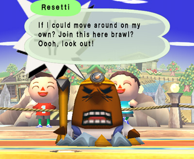

#7544 1 2006-03-21T05:03:12Z mattk210 anyone know how to make that fps speedometer in the corner of n?
thanks in advance
#156643 4 2006-03-22T05:43:13Z mattk210 well, a mspf thing would be great too...
#157164 8 2006-03-23T21:38:43Z mattk210 thanks a lot, i was using flash, so thats great.
#10391 1 2006-08-01T07:57:51Z mattk210 i'm making a game, and i need help with walls. basically, ive used the code on the website tutorial to make walls that are square shaped, circle shaped and some triangle shaped.
(i just edited the code in the source)
does anyone know of a system whereby i can do the same collision, projection stuff with any triangle, given a circle mc and its radius, and the location of 3 points that make up the triangle, that could make triangular obstacles.
I realise this stuff is explained in the tutorial, but thats a bit too technical (i got lost at the part about voronoi regions)
so, if anyone knows of a place i can find a simpler tutorial, knows how to do it or, even better, can find something along the lines of the source of the tutorial (that was really easy to adapt), their help would be GREATLY appreciated.
#210672 17 2006-08-03T00:04:08Z mattk210 raigan- thanks a lot, i cant test it yet, but it looks good. wow this topic has expanded a whole lot since i last checked
EDIT:ookay, so ive determined which test to use (line vs circle or circle vs circle)
so how do i do the projecting stuff?
(the position of the actual closest point is p0 + dp*(p1-p0)
that doesnt work if i go
cx=p0.x + dp*(p1.x-p0.x)
cy=p0.y + dp*(p1.y-p0.y)
where cx is the x of the "closest point" and cy...
i get numbers like 8000...
sorry for being such a n00b, but my knowledge of vectors started only about a week ago.
ANOTHER EDIT:
http://tonypa.pri.ee/vectors/tut08.html
i found that
deals with my problem exactly, but its terribly explained (unlike metanets tutorials

)
and you know, that site references you, metanet.
im still having problems with edit 1
sorry to be such a nuisance
#212019 20 2006-08-06T01:59:52Z mattk210 d is normalised, v isnt. Should it be?
when i normalise v, the calculated closest point is actually on the line, but it's definitely not the real closest point
this is my code:
v0={
p0:{x:0,
y:0},
p1:{x:300,
y:100}
}
v0.vx=v0.p1.x-v0.p0.x
v0.vy=v0.p1.y-v0.p0.y
v0.len=Math.√(v0.vx*v0.vx+v0.vy*v0.vy)
d={
vx : v0.vx/v0.len,
vy : v0.vy/v0.len
}
c={
x:400,
y:100,
r:25
}
v ={
p0:{
x:v0.p0.x,
y:v0.p0.y
},
p1:{
x:c.x,
y:c.y
}
}
v.vx=v.p1.x-v.p0.x
v.vy=v.p1.y-v.p0.y
v.len=Math.√(v.vx*v.vx+v.vy*v.vy)
vn={
vx:v.vx/v.len,
vy:v.vy/v.len
}
ndp = vn.vx*d.vx + vn.vy*d.vy
dp = v.vx*d.vx + v.vy*d.vy
if(dp<0){
trace("p0")
}else if(dp > v0.len){
trace("p1")
}else{
trace("line")
cx=v0.p0.x + ndp*(v0.p1.x-v0.p0.x)
cy=v0.p0.y + ndp*(v0.p1.y-v0.p0.y)
lineStyle(5)
moveTo(cx,cy)
lineTo(cx+1,cy+1)
}
//render:
lineStyle(0)
moveTo(v0.p0.x,v0.p0.y)
lineTo(v0.p1.x,v0.p1.y)
circle_mc._x=c.x
circle_mc._y=c.y
(i just have a circle symbol on the stage called circle_mc)
as you can see, i need to have a lot of messy vectors, because some calculations need normalised vectors, some not.
thanks for all the help everybody, i really appreciate it
this is a lot more difficult than i thought it would be

#212056 15 2006-08-06T03:52:51Z mattk210 i realise this is a fairly old topic, but to clarify
flash can only dynamically save files as an SOL alone.
the SOL cannot be anywhere other than the application data folder.
Using external things like php, you can save text files, but not being online, php is not an option.
anyway, i'm sure this game should be kept in flash.
#212115 22 2006-08-06T08:50:45Z mattk210 im in austrailia, its only 7pm

i understood about 10 percent of that
i'll give it a crack anyway...
EDIT: nope, i cant do it, whats the difference between v0 and seg
and does that code actually find the closest point? because for now, thats what i need
and then comes projection...
man i'm such a n00b
#212577 4 2006-08-07T07:08:46Z mattk210 uh, hi. I didnt want to make a new topic for this, so sorry for the off-topicness, but theres a warning in this section:
Please post ONLY programs specifically related to Metanet; if you made your own game, post it in the Other Games section, etc.
the link to the other games section just goes back to fan programs, so uh, how do i get to the other games section?
#10538 1 2006-08-08T22:05:13Z mattk210 well, you know how in userlevels, when you die, you have to reload the level to quit (with Q)
thats really annoying, especially on a complex DDA that takes ages to reload
could that possibly be fixed?
#10617 1 2006-08-13T06:40:43Z mattk210 Hello all.
I am developing a game called Sphoid (the link is really underdeveloped as you'll see)
http://www.freewebs.com/mattk210/sphoid.swf
you might recall a topic I made a few days ago about collision detection problems, well collision detection is proving to be a huge problem.
at the moment I'm running a system whereby i have all the tiles in metanet's demo A. They can be freely placed and to check for a collision, all the tiles are run through a loop.
i suffer from the bug in
http://metanet.2.forumer.com/index.php?showtopic=11756
and i have to use only certain patterns of tiles (no overlaps for example) to make my maps.
my question is: for Sphoid, what do you people think is the best kind of collision detection solution? something surface based, or tile based (free placement or a grid?) also, if anyone knows of some engine that has it all coded in (like tutorial B of metanet), that would be great.
i need varying sizes of curves, and varying angles of straight lines.
any input would be greatly appreciated.
mattk210
#215303 8 2006-08-14T02:12:02Z mattk210 thanks for the positive feedback and advice - i will of course eventually have enemies and more sphoids. I'm planning on an action-adventure type thing.
so do you people think my approach of free tiles is OK? could anyone perhaps contribute some code for fixing the bug
http://metanet.2.forumer.com/index.php?showtopic=11756
you see, when I change the order of collisions in this guy's scenario, it still projects in the wrong place. How do you fix that with n?...
and yes, i hope to use raycasting when I understand vectors well enough, for many different things.
also,
Cool Idea, but I would prefer it if you could use it even when it wasn't fully recharged. Also, It would be useful if yo could use it as you were falling, and it would save you.
unfortunately, if that were the case you could use it infinitely by tapping it over and over. Maybe I'll ban helicopter while falling to prevent that...
right click to change weapons, the ENTER to get ammo will change.
#215339 76 2006-08-14T06:18:26Z mattk210 i wonder if future metanet games will be console-only. I sure hope not, seeing as I don't have or plan to get an xbox 360

#215653 13 2006-08-15T03:07:34Z mattk210 yea, i've had to set up my map so that the bug didn't occur. I couldn't make those round corners square for example, because of the bug.
and no mirrors please. (sorry but i'd like to keep all sources up to date).
what im interested in is how it's fixed in n.
#216362 16 2006-08-17T09:43:48Z mattk210 omg that is the best picture ive ever seen of n
is that actually a 3d render, or just drawn on top?
if so, give us more poses with that model!!!
i don't like the mines...
#228233 44 2006-09-13T22:29:16Z mattk210 ooh pick me
but it looks like i have a looong time to wait
#11232 1 2006-09-14T07:46:08Z mattk210 I have been making very minor games for a while now, in flash (and before that game maker). However, these 2 environments have many limitations, and I would like to learn how to make real, nice games (you know, fullscreen exe's like halo zero or something).
I understand I can use C++ and DirectX, and i have microsoft visual C++, but it's quite different to what I'm used to...
can anyone suggest some good, online help for making basic games, and learning C++ (really basic stuff, i pretty much have no idea)
tutorials and stuff, you know? I don't really want to buy books becuase it's really just a free time thing.
any help would be greatly appreciated...
#228432 50 2006-09-14T08:07:53Z mattk210 hmm, it's good but it doesn't really blend with the previous image, the previous one had shading and part of an S
but it's really good
#228631 3 2006-09-14T22:32:28Z mattk210 thanks amartalco
sphoid is going very badly, i just don't have the ability to take on a project that big I was far too ambitious.
So, I've decided to put that on hold until i can make more basic games like platformers, and make them well.
#228642 5 2006-09-14T22:43:22Z mattk210 those tutorials are good, but..
how do i put code into microsoft visual c++?
there's like 50 areas of code, and i get errors when i put the suggested code in any of them..
does anyone know C++
and is that even the best environment to use?
#228894 8 2006-09-15T10:50:31Z mattk210 i dont think im doing it right, so am i supposed to have 1 block of code as my program? or many like flash? And where do i put my code?
i can't seem to find any help at a really basic level.
#229020 10 2006-09-15T22:41:10Z mattk210 thanks. So, do i just have one bit of code seperated into functions (unlike flash where you have many blocks of code all separated into functions)?
#11251 1 2006-09-15T22:46:06Z mattk210 i just started using it but i get pretty low speeds like 10 kb/s. And the speed keeps fluctuating, it rises from 3kb/s to 30kb/s in about 10 seconds then goes back down again in another 10 seconds. Is this normal?
(there are 5 seeds, 10 peers)
#230202 12 2006-09-18T05:56:37Z mattk210 ah. thanks a lot. i know what a class is, and flash is oop, right? now i just need to find some good tutorials (or explore cprogramming.com).
thanks, everyone
#230634 35 2006-09-19T10:16:57Z mattk210 i wish everybody would not say LAG!!!1 when someone suggests a new feature. Damn, COLORS are not going to lag!
what's going to lag is calculations, physics and complex rendering.
and I think customisable ninjas are an OK idea, the best way is probably to have a draggable N where you can change the limb proportions and colors on a very basic level. (within the game). If you don't understand flash and vectors, please don't keep trying to say that PNGs (or BMPs) should be used. Just trust me. They shouldn't.
sorry...
#232987 52 2006-09-24T21:04:25Z mattk210 as of sept 22, toribash is not free
better remove it then...
#233740 23 2006-09-26T06:24:13Z mattk210 this wouldn't work, if youd blocked something with mines you could blow them up and cheat, and LOTS of stuff is blocked by mines
and other things block too, you could completely wreck the challenge of most levels
maybe only rockets could die, that'd be ok.
#245316 15 2006-10-24T09:35:23Z mattk210 clifty is absolutely right=not possible
#245320 16 2006-10-24T09:48:19Z mattk210 i think this would be nice, but not necesarily for comics, just for posing stuff.
but digitalk has the wrong idea with game maker. it should be done like n poser, in flash, with the ability to bend the ninja and stuff
#11987 1 2006-10-29T02:06:20Z mattk210 You may have seen my previous topics on C++. I'm currently developing a game. I started in Flash, and I'm attempting to move to C++.
However, C++ is quite difficult, and before i learn it, i have some questions:
1) is it possible to render and work with vectors like in flash? If i wanted the main character to be an oval, could i just draw one dynamically and rotate it, resize it whatever?
2) can i anti-alias these vectors?
3) do i do these things (if i can do them at all) in DirectX or OpenGL?
My game is 2D. I know Mare and Raigan's next game is C++ and OpenGL, so is it as clean and antialised as N?
I hope all that was clear...
#247666 3 2006-10-29T23:07:34Z mattk210 thanks... so can i use a function like lineto() and curveto()? or do i have to make them myself?
so would a game such as n be possible in opengl?
#249009 6 2006-11-02T08:26:32Z mattk210 what are you using for 'robotology'?
And if i use allegro, do all other computers have to have allegro for me to distribute my game? (i wouldn't assume so, but i just want to make sure)
and with allegro, is it as easy to program as flash? because all this c++ stuff is really confusing (binary trees, pointers etc)
#249413 9 2006-11-03T05:06:34Z mattk210 i wish there were some way to program really easily. My problem is that i want to use more calculations without lag, register right-clicks and i also want to change my program icon. actionscript is really easy, but c++ is really hard. I don't really understand anything (i'm only 14 and have learnt everything by web tutorials)
i'm not very far into c++, but is it possible to create a system like flash, where you do stuff by frames and movie clips, and everything is aa'd by default?
Are there any libraries like that?
what sort of system would a commercial game use?
and how can i get animated vector 'movieclips' into c++?
sorry to ask so many questions, but i just have so many problems...
#249608 11 2006-11-03T20:40:36Z mattk210 hmm... maybe you're right. but what exactly is scaleform? do i just give it a swf and it makes it all lag-free, or does it give me the ability to program flash-like in c++?
but $10k...
swf studio is $300... are there any free options? i mean, i've already bought flash, i'd rather not spend more money
i appreciate your help. i realise you have games to make rather than helping me.
#250266 13 2006-11-05T06:02:06Z mattk210 is there any free way to just do file i/o or rightclicks in flash? even with hacky dlls?
i'm pretty sure i can change the icon
#252057 16 2006-11-09T05:16:39Z mattk210 i know that c++ is very difficult, but i hear of other languages such as java or basic.
how easy is it to make games in these? and what sort of power do you get?
and is their syntax similar to flash?
i am leaning towards flash for simplicity, but it lags a lot and i want to be dead sure of my language before i dedicate myself to it...
and it DOES lag. a lot. if anyone has some time, can they please tell me why the hell the attached file lags?
it's fine at first, but after about 20 seconds, it runs at about 2 fps...
Attachment (lost): post-14-1163049681.fla
#252095 18 2006-11-09T08:30:53Z mattk210 yeah, but this isn't a 10x speed penalty. this is a simple rotating circle with like 5 variables and it somehow manages to lag. i can only imagine what would happen with a fully fledged game... just download and try it, its only 100kb...
thanks for all your help
#252473 246 2006-11-10T07:21:29Z mattk210 i think im gonna forget my turn... how long until i time out?
#253918 251 2006-11-13T08:34:59Z mattk210 no offense to some people, but some of these things are really dodgy. Should we fill in some of the dodgy ones? (such as rincewind's)?
#254447 259 2006-11-14T04:25:31Z mattk210 i'm not skipping my turn!!! ill do it now, after zres
edit: and done
#254452 21 2006-11-14T04:41:07Z mattk210 i didnt say anything about skipping my turn!
anyway...
i hope this isn't too hard to blend off
..the moon image i used is the first result on google when you search for the moon
Attachment (lost): post-20-1163479267.png
#257718 7 2006-11-21T07:36:29Z mattk210 if you're making a really simple game, as i imagine you are, just reverse the velocity of the y value for a horizontal collision and reverse the x for a vertical collision. Forget corner collisions, they're more complex.
if you're still here...
there is a lot of help available as tutorials on the internet. Just try googling stuff.
#260921 267 2006-11-28T08:32:51Z mattk210 that's what i thought. What say we don't remove some images, but we clean them up?
my problems are:
the blending between red reamer and borealis
elaxions weird blends on both sides - what's with just starting blue for no reason?
rincewind SW's random collection of dodgy stuff (sorry, was that a bit harsh?)
Monkeyfeces Nutmonger III is okay, but a bit amateurish
the blend between silece and sketch
most of these problems could be fixed in a few seconds...
#260924 21 2006-11-28T08:36:55Z mattk210 i think try youtube. Damn i want to see this...
Where can i see your other (non n-related) works?
#261401 27 2006-11-29T05:52:38Z mattk210 Yay for australians! I live in sydney.
i have the same problem as you when trying to get involved in stuff. Our school doesn't have anything about programming or digital art, so i had to learn it all myself
and I imagine it will be hard to get some sort of well-paid job. What I really want to do is work in games.
#261409 273 2006-11-29T06:41:27Z mattk210 red reamer-borealis on my computer has a weird edge
maybe its just me...
#261411 9 2006-11-29T06:45:56Z mattk210 the way you should be doing this is by giving a x and y velocity of the ball. If you want an arch, give it an xvel of -5 or something and a yvel of 5 and set the grav to 1.
every frame, add the x and y vels to the pos of the ball, and also add the grav
that clear?
#262518 14 2006-12-01T07:57:12Z mattk210 actually, it is possible to save txt files from flash. If the file is embedded in a web page you can use php to save txt files and if it's on your computer you can use some sort of external language to save text files. Its also quite simple to use a "projector" to mod flash files so they're real programs and you have more options
but it is impossible using flash alone.
#264804 2334 2006-12-05T06:46:43Z mattk210 is that dr lunatic suprememe with cheese?
do i get a go now?
#265341 2336 2006-12-06T04:04:09Z mattk210 
here...
#266431 11 2006-12-08T08:16:05Z mattk210 what's with the censoring?
#269007 9 2006-12-12T21:48:11Z mattk210 if you want a good cache, use the internet archive: archive.org...
#12816 1 2006-12-13T05:03:54Z mattk210 some of you might have seen Sphoid before (
http://www.freewebs.com/mattk210/sph.swf)...
how the HELL can i do collision detection for that flamethrower?
i cant really test collision for each circle...
#269312 24 2006-12-13T07:43:23Z mattk210 thankyou very much. I did some wierd, wierd stuff to avoid the lag...
could you also answer my other topic about flamethrowers?
#269362 3 2006-12-13T09:41:26Z mattk210 hmmm... i'll give it a try. thanks.
EDIT: No good, it only works when i'm not moving... when i move, the flamethrower curves and does crazy stuff and collision no longer works.
#12891 1 2006-12-16T03:32:50Z mattk210 check out my game!
http://www.deviantart.com/deviation/44704131
kinda pointless, but pretty fun... my highscore is 137!
#271900 28 2006-12-17T05:39:06Z mattk210 stop bashing me, it was just a 10 min game...
the reason it cant reset is because i wasn't bothered to delete all the objects for reset
and the reason there's no fancy graphics is becuase it's easier to work with squares
and its slow becuase its being played in a browser. play it seperatedly for speed.
i realise its a ripoff, there are about a million other ripoffs...
#276157 12 2006-12-23T23:09:12Z mattk210 actually, it's quite difficult to cut out the edges properly unless you know what you're doing. Pixel editing gives a very shoddy effect... If you can trace vector (which is what i assume jtbandes is doing), it takes about 10 seconds, but I'm sure some people just would prefer it done here without learning how...
#13159 1 2006-12-26T00:48:06Z mattk210 i learnt this from a friend at school... see if you can explain it. I can!
let x=1
x-x=x-x
thats true rite?
factorise LHS with difference of 2 squares
(x-x)(x+x)=x-x
factorise RHS by taking out x
(x-x)(x+x)=x(x-x)
divide both sides by (x-x)
x+x=x
2x=x
therefore 2=1
QED

#277316 17 2006-12-26T09:19:52Z mattk210 woah, nice...
i've been wanting to do something like this for ages but I can't get my head around all the collision detection
great job
i can't wait until the source is released so we can see that sort of stuff in the real n!
#277846 102 2006-12-28T03:32:53Z mattk210 i hope i'm allowed to vote being a very small member of the community
coz i did
i also hope the voting hasn't ended
coz then i'd look like a real idiot
#13332 1 2007-01-05T00:55:41Z mattk210 These aren't my first, but they are my first serious maps which i've spent a lot of time on
i think they're quite good. None of them have enemies or any objects apart from gold, doors and oneways.
http://numa.notdot.net/map/74744
http://numa.notdot.net/map/61106
http://numa.notdot.net/map/65741
they're in order of difficulty: hardest one first
#13572 1 2007-01-18T10:58:39Z mattk210 Quote
but.. one of our friends wrote a .dll in c to let us read/write files, and it's less than 1k in size.
i saw this in
http://www.gotoandplay.it/spotLight/N/
what's the story? would you consider sharing it?
EDIT: and what's an O(n2) algorithm?
#287327 3 2007-01-19T00:49:19Z mattk210 
well i know what a recursive FUNCTION is...
#287425 5 2007-01-19T07:15:11Z mattk210 i'm making a game. you've seen it in its early stages, actually... its called sphoid.
if you think it would be easy to use java for file i/o can you prepare a simple example? writing to text files is one of my many problems...
#287603 7 2007-01-19T22:35:12Z mattk210 so is that java? so i can compile that with some java compiler into a jar file right, and then execute it somehow with actionscript?
how do i execute it, or pass variables into it to save?
fscommand("exec", "fileio.jar") cant pass variables...
thanks, by the way
EDIT: also, is it possible to use java to find the screen resolution then pass that to flash so i can window it or full screen it accordingly?
hell, could i even do all my calculations in java and all my rendering in flash? that would be sweet...
#287946 10 2007-01-20T21:46:46Z mattk210 yeah, its a projector...
i would love a java file if you could give me one... could you also possibly give an example of flash talking to that java file? I mean, i need to be able to send the data to save...
I don't like *.sols. they're too hard to find by normal people and they're very easy to accidentally remove (with cleanup progs).
#288370 12 2007-01-21T21:39:10Z mattk210 i prefer not to work with sol files, it just looks unprofessional
your jar file doesn't seem to work. (it doesn't even load). I think that's because (taken from the fscommand documentation):
Quote
The exec command can contain only the characters A-Z, a-z, 0-9, period (.), and underscore (_). The exec command runs in the subdirectory fscommand only. In other words, if you use the exec command to call an application, the application must reside in a subdirectory named fscommand. The exec command works only from within a Flash projector file.
so i don't think you can use spaces... (by the way, i AM using the subdir fscommand)
EDIT: and even if I don't give any arguments, the file doesn't load... maybe you just can't exec java files using fscommand...
EDIT 2: and it definitely works with
java -jar FileWriter.jar 0 hello.txt hello
EDIT 3: I CAN exec a *.bat file containing that ^ but that kind of negates the point of using java and i still can't pass args
#289274 4 2007-01-23T21:42:05Z mattk210 here's B
your're right, B contains all the stuff in A
now could we possibly go back onto my java topic? i'm still having problems...
Attachment (lost): post-14-1169588525.txt
#289282 18 2007-01-23T21:59:47Z mattk210 i guess so...there'll still be a sol file but under the folder addictinggames.com instead of localhost.
#290351 14 2007-01-26T22:59:01Z mattk210 well, i guess that brings me back to the .dll raigan mentioned in his article
thanks anyway...
#290467 16 2007-01-27T05:41:30Z mattk210 your help is very much appreciated.
i think the most important thing is to figure out how to pass arguments; no spaces are allowed in an fscommand
i hope you acheive something

#290829 22 2007-01-28T05:42:21Z mattk210 i think all ninjas should be controlled. And as for lag, sure, it would increase lag, but most computers an handle many ninjas, and it's optional anyway
this is one of the few ideas that would not affect existing levels, which makes it even more great.
#292104 16 2007-01-31T08:56:04Z mattk210 best compressor: flasm
you need to know how to use it though
i have my doubts that you can map n to the psp's buttons without illegal decompile
#293528 4 2007-02-04T06:07:06Z mattk210 well, you make a movieclip of a running animation and give it the instance name of "stick"
then in the main timeline you go
function onEnterFrame(){
if (Key.isDown(Key.LEFT)){
stick._x--
}else if (Key.isDown(Key.RIGHT)){
stick._x++
}
}
what that does is to check for the left/right keys being down each frame and if they are, increment/decrement the horizontal position of the stick
#13864 1 2007-02-04T08:07:25Z mattk210 EDIT: IGNORE THIS
in my website, i have a row that must be 25px high because of an image in it
however, if i put a linked 25px image in it, there is a thin blue border around the image that stretches the height to 27px. Even if i hide the border, it still stretches
any ideas?
EDIT: this is just typical. i post this then i find the solution. just align to top.
so, IGNORE THIS
#293558 3 2007-02-04T08:47:20Z mattk210 not uploaded anywhere. i can give you html but it means nothing without all the images and frames
#293928 5 2007-02-05T05:53:29Z mattk210 ok, a new question: how to set the margins within table cells?
#293943 7 2007-02-05T07:57:25Z mattk210 thats for page margins not within-cell margins
i tried that, of course
#293959 9 2007-02-05T09:31:56Z mattk210 i guess you weren't listening when i said that was for page margins not cell margins
either that or i'm doing it wrong
i'll take you up on that offer, i do have a few things to discuss...
#293963 10 2007-02-05T10:00:52Z mattk210 ok, have a look at this:
http://www.freewebs.com/mattk210/index.htm
(as you can see, it's very raw right now)
if you open it in internet explorer, weird stuff happens to the header. can you remedy this?
#293965 12 2007-02-05T10:07:20Z mattk210 thanks. ill add you to msn some time or other.
what do you mean by "smacked my head"? am i doing something obviously wrong?
#293972 16 2007-02-05T10:30:10Z mattk210 thanks very much, ethrel
i think the problem is related to the width of the "nintedo wars" image. if i change that, everything works.
#293974 18 2007-02-05T10:33:19Z mattk210 aah, but he (she?) DOES know best
just like bwd
although he IS treating me like an idiot (am I?)
putting nbsp's in stretches the 5px high cells
#293977 20 2007-02-05T10:43:25Z mattk210 just tried it: doesn't work.
#294300 22 2007-02-06T04:18:15Z mattk210 thanks. ill try it now
#14107 1 2007-02-18T07:32:16Z mattk210 In updateEdges() i'm not really sure what is meant by EID_OFF and EID_SOLID
if(this.ID == TID_EMPTY)
{
//...
else if(n.ID == TID_FULL)
{
this.eU = EID_SOLID;
}
//...
so from that i figure a solid edge is one that runs along the tile border
but later, i see
else if(this.ID == TID_FULL)
{
//...
else if(n.ID == TID_EMPTY)
{
this.eU = EID_OFF;
}
//...
so if an empty cell is next to a full cell, its EID_SOLID but if a full cell is next to an empty cell its EID_OFF
wtf?
am i missing something? can someone please define the edge states very clearly?
#299530 3 2007-02-21T09:52:38Z mattk210 thanks for clearing that up.
but if you use "only linesegs and arcs" then won't you need to test collision with the whole world every frame, rather than just the 9 possible tiles?
#307638 7 2007-03-25T10:14:16Z mattk210 i find setInterval isn't as reliable as getTimer. Using getTimer you can actually check to see whether you're on time each frame and compensate...
i used to use setInterval but it doesn't seem to work that well.
EDIT: and i usually set a very high framerate. It looks smoother and lag doesn't really matter with getTimer...
#308918 9 2007-03-30T21:43:34Z mattk210 sorry, i had to wait for the weekend coz the school computers blocked forumer...
iterationscompleted=0
function onEnterFrame(){
//frames per second is 10; gettimer measures in milliseconds
iterations=Math.floor(getTimer()/100)
for(i=0;i<iterations-iterationscompleted;i++){
tick()
}
iterationscompleted+=iterations-iterationscompleted
}
that's very hasty code, you may find problems, but you get the idea
#310188 4 2007-04-05T07:51:34Z mattk210 according to actionscript documentation, _parent should work...
but it doesn't.
a workaround is to use
var curropt=0
instead of this.curropt=0
you can access it as curropt from within the onKeyDown listener, but it's not global so you cant access it outside that.
which is what you want i think...
#310290 6 2007-04-05T22:35:58Z mattk210 good point. i don't think so. The only thing i can think of is to make this. curropt=curropt whenever it changes, from within the class.
although thats a really inefficient method...
#14730 1 2007-04-05T23:44:30Z mattk210 i doubt anyone will be able to help me with this, as it's actually present in metanet's tutorials, but anyway:
as you can see in the attached picture, when there's a valley shape and you're moving downwards quite fast, you sink down into it.
does anyone have a fix?
Attachment (lost): post-14-1175816670.jpg
#310334 9 2007-04-06T03:31:47Z mattk210 a function IS an object
well, it's a type of object...
while it isn't really a class, and it's not the intended use, it should work just fine.
as for your problem, _parent should work.
this piece of code is taken from the flash documentation:
this.square_mc.circle_mc.onRelease = function() {
this._parent._alpha -= 5;
};
so yeah...
#314090 12 2007-04-18T23:47:35Z mattk210 omg that owns. ill definitely be using that for my game if you don't mind...
does it slow down performance much?
#316758 34 2007-04-29T12:34:46Z mattk210 whats this about the whole engine needing to be rewritten? collision vs. a line is the most basic part of n's engine. i fully support this idea.
but yeah, putting different angles together would definitely result in some glitchy stuff.
#319991 3 2007-05-10T04:00:28Z mattk210 it occurs when you're moving into a gap like shown. if you keep moving in that direction, you stay like that. (so yeah, it's the latter.)
repeating the collision code many times helps, but it's obviously slower and it will still be overlapping slightly after many projections.
it's an issue with my game because there's no bounce and the main character is actually displayed as a circle, so its really obvious.
is there any way to get projection vectors for both tiles and sort of add them together to project out of both tiles at once?
#320719 47 2007-05-13T04:36:31Z mattk210 basically, if a human thinks up the way to do something, another one can figure out how to undo it.
too true
I think that determined people can ALWAYS get past any security, and that the best solution is to have 2 separate files: a demo and the real thing. This way, if someone wants to pirate the game they'll have to risk downloading files from dodgy sources.
#321057 5 2007-05-14T07:04:58Z mattk210 it probably does, the bounce just hides it (and the fact that the ninja isn't rendered as a circle)
#321552 7 2007-05-16T00:17:33Z mattk210 that's an interesting idea, and I'm not sure i fully understand, but i'll certainly investigate further.
when you're in a "valley" such as in my diagram, and you're touching two edges at once, the ideal projection vector would always be the same, so if at loadtime, I calculated the ideal projection vector using the "inflated tile" idea, i could just use that vector whenever in that situation.
...right?
#321923 9 2007-05-17T06:07:34Z mattk210 thanks, it's a lot more clear now.
I'll mess around with the concept , see where i get to.
#321931 55 2007-05-17T08:27:52Z mattk210 using some kind of debugger (even something like cheatEngine), you can unrandomise the choice of system file.
also, you can track access to system files using a system debugger
...i think
#323035 2 2007-05-21T06:51:59Z mattk210 use
function onEnterFrame(){
if(Key.isDown(Key.LEFT)){
mc._x-=10
}
if(Key.isDown(Key.RIGHT)){
mc._x+=10
}
//etc...
}
#323521 10 2007-05-23T10:35:05Z mattk210 EDIT: dont worry, im an idiot
#15466 1 2007-06-01T08:47:25Z mattk210 yes, i do suck. I can't seem to get my head around the math for circle-line intersection, which i need to solve
the problem described in this thread:
http://metanet.2.forumer.com/index.php?showtopic=16803
can anyone help in this regard, explaining how i can write an algorithm to find intersection points?
the information i have is:
the delta-x of the line
the delta-y of the line
a point on the line
the radius of the circle
the coordinates of the center of the circle
I don't want to calculate the gradient because vertical lines cause a div-by-zero, so i can't use y=mx+b form.
#326443 3 2007-06-02T02:24:42Z mattk210 it's great to see new members who know what they're talking about, especially when they're better than me
yes, it's an infinite line, but the results i wanted were the 2 intersection points of the line to the circle (see crappy diagram). there's the possibility of 2, 1, or 0 intersections, and my brain falls apart.
and the only thng i need are those 2 points of intersection (or lack thereof), i dont need any additional data.
Attachment (lost): post-14-1180751082.gif
#326445 8 2007-06-02T02:30:36Z mattk210 that's very similar to my problem: colliding with 2 shapes at once is a major headache.
my partial workaround for scenarios such as that was to store special data at loadtime for surfaces that are made of multiple shapes, and use that instead.
The much larger problem with me was to resolve collisions when descending into a "valley" between 2 shapes.
EDIT: oh damn, in posting this i un-bumped my other topic, i still need help there...
#326498 5 2007-06-02T06:51:26Z mattk210 excellent!
you have been a massive help!
#327307 23 2007-06-04T10:42:48Z mattk210 i found some awesome anime awhile ago called Yakitate! Japan. It's about bread.

#327599 29 2007-06-05T08:36:38Z mattk210 just submitted a level... But it's a very hard jump puzzle, and I'm afraid that if the DS version's physics are slightly different to the PC version's, some jumps and squeezes may be impossible.
#328340 3 2007-06-07T07:28:20Z mattk210 and what if you could link doors to other levels to make branching paths: get the easy door which leads to a hard episode, or get the hard door which leads to a bonus level full of gold
#328918 5 2007-06-08T23:39:28Z mattk210 metanet mentioned they'd be using adobe apollo for the next version (extending flash)
so this may indeed be implemented, along with all other file I/O suggestions
#329487 37 2007-06-10T07:10:58Z mattk210 what's the point of this?
meh, I'll play along
Super Metroid (SNES)
Metroid Zero Mission (GBA)
Metroid Prime (GCN)
Metroid Prime 2 (GCN)
Meteos (NDS)
Panel De Pon DS (NDS)
Gunpey-R (NDS)
Tetris DS (NDS)
Lumines mobile or luminesweeper (PC)
Osu! Tatakae! Ouendan (NDS)
Moero! Nekketsu Rhythm Damashii Ouendan 2 (NDS)
SSBM (GCN)
Advance Wars (GBA) (a little)
#15617 1 2007-06-10T23:17:22Z mattk210 very often when I make a map, I like to test it in debug mode so I can check that it's possible. (or if I just can't do a hard map). If i die I just reset to the point I died to try again.
However, when I die by a mine, I explode and all the mines explode. So when I reset to that point, the mines are gone. This is obviously pretty bad, because I can't test it properly until I reset the whole level
so why not have the mines stay there in debug mode?
#329802 17 2007-06-11T00:04:56Z mattk210 My best score on DS endless mode is 15,715,478. I'm actually trying to get 100 million(99,999,999), but it takes a while.
endless mode in Tetris DS is pretty stupid, because infinite spin and the hold function allows you to literally play forever even if you're not skilled... Marathon mode is a much better indicator of skill
#329898 5 2007-06-11T04:06:26Z mattk210 Wow. More members that don't read the manual. When you 'splode, press the Debug key (` or \) and then R.
because I can't test it properly until I reset the whole level
wow, I'm glad you can read
#330792 39 2007-06-13T09:12:35Z mattk210 awesome but how do i get the funny characters to be japanese? I set my system's language to jap, but still no...
(i can read a little japanese)
#15758 1 2007-06-18T07:19:30Z mattk210 I started something in
http://metanet.2.forumer.com/index.php?showtopic=16803
but I didn't want to triple post, so i'm posting my updates here.
Basically, my problem is that in N's system, when colliding with 2 tiles at once, the projection vectors are only accurate to 1 of the tiles. This is fine for a platformer, but in my game there's a lot of accurate movements required, and no gravity, so the problem is easily noticeable.
Raigan descibed an "inflated tileset" system whereby all the tiles are inflated by the circle's radius, and these inflated tiles are collided with a point.
I decided to go with a combination of that and the existing method. When 2 collisions are found in the same frame, a special function is called which inflates the 2 offending sides and intersects them to find the real point of projection, as shown:

(the blue cross)
BUT, when I try to do the same with vertices and arcs, it keeps finding vertices to collide with that it shouldn't, and various other wierd stuff happens.
it sometimes works:

but often the circle has travelled so far into the valley that it tries to collide with the first method, which results in it being projected far out of the valley.
also, in cases like this

it tries to collide with the vertex of the dark grey tile, leading to an incorrect projection vector: my engine can't handle more than 2 tiles.
I have no idea where to go from here. I wish I could finish the technical side of my game and work on the creative side, i've been fixing bus for months now...
EDIT: wow, that's a long post
#332495 5 2007-06-18T07:47:42Z mattk210 Every tile must have 1 solid edge.
not true
you should be able to make small-45deg tiles, the edge flags will just have to be all "interesting". same with 1/4-full tiles.. is there a specific problem?
(from the thread on modifying tutorial code)
#332945 18 2007-06-19T07:09:33Z mattk210 have you tried it yet?
unfortunately, I don't know how to create a exe to test this.
could anyone produce a quick exe that can accept arguments to write text files?
i think the chr(9) bit may be the solution to my problem of fscommand not accepting spaces.
#332949 4 2007-06-19T07:29:09Z mattk210 I returned to a demo using my old system, and realised that the small problems in the original system are nothing compared to the many problems trying to fix it has created. I think it'd be better to simply try to avoid these problems as you said, and treat the severe ones with special cases.
*sigh* well, there goes 2 months of hard work.
thanks for your help
EDIT: what do you mean by that proxy circle thing? do you mean keep it the same (as the tutorials) but add up all the individual projection vectors? because I'm not adding bounce/friction impulses, i'm not interested in that.
#333876 2 2007-06-21T06:04:21Z mattk210 flash can't automatically send anything to anyone, and it can't save files as .jpg (or anything alse), at least as far as
this topic has got me.
#334362 4 2007-06-22T06:57:41Z mattk210 In order to have pdf as a printer option, you need adobe acrobat installed.
therefore most people can't print to pdf. However, if you're using php, you can send data to a php script and then php can save files. Google it, it's pretty simple.
#335245 233 2007-06-24T11:51:54Z mattk210 It seems I deleted my copy of the special Ned. Could I get another copy? I want to play my level again.
#335386 236 2007-06-24T21:23:43Z mattk210 thanks
#335547 6 2007-06-25T07:03:04Z mattk210 no, you can't send emails with flash alone.
you can send data to a php script if it's web-based and you can use a flash extender such as adobe AIR to do it locally.
#338237 27 2007-07-03T04:21:37Z mattk210 I have a feeling I should have made an easier map.
oh well
#339305 87 2007-07-06T03:15:09Z mattk210 I've just realised that since the SUBLiME page has turned into the screenshots page, I haven't been seeing links to the special editions of NED. May I have the links?
I'd like to have these special versions.
exuberance posted the ds version in the other sublime topic for me
#339654 4 2007-07-07T01:17:13Z mattk210 any particular pose?
#339660 6 2007-07-07T01:38:36Z mattk210 nevermind, i just made one. 24 bit with an alpha channel so xp or vista only. The ninja running.
http://files.filefront.com//;7982162;;/
want more?
#16101 1 2007-07-07T03:35:48Z mattk210 Uh... i was messing around with stuff that i really shouldnt have been messing around with, trying to cheat in N, and to my surprise i succeeded and accidentally got an entry on the online highscore list.
how do i take it off?
#339722 3 2007-07-07T03:54:22Z mattk210 hmm... it seems to have fixed itself, I cant see it anymore
#341585 3 2007-07-11T01:58:41Z mattk210 I'm probably the wrong guy to give advice, as I struggle at this myself, but i just use basic trig to get the slope vector (and then derive the normal), and this is stored until the angle is changed. so to test collision, you project the coordinates of the closest vertex to the slope onto the slope's normal.
#16168 1 2007-07-11T02:42:19Z mattk210 my 10 year old sister entered a coloring competition and won a PS2!!! How lucky can you get?
What games do you recommend? right now i have quite a short list
okami
Katamari 2
shadow of the collossus
metal gear solid 3 ( i have 1+2 on PC)
guitar hero
devil may cry 1+3
ico
#341605 3 2007-07-11T02:50:57Z mattk210 oh yeah, that reminds me, are there any games to suit a 10 year old girl that I might enjoy too?
#341658 76 2007-07-11T05:55:28Z mattk210 missed me
Super Metroid (SNES)
Metroid Zero Mission (GBA)
Metroid Prime (GCN)
Metroid Prime 2 (GCN)
Meteos (NDS)
Panel De Pon DS (NDS)
Gunpey-R (NDS)
Tetris DS (NDS)
Lumines mobile or luminesweeper (PC)
Osu! Tatakae! Ouendan (NDS)
Moero! Nekketsu Rhythm Damashii Ouendan 2 (NDS)
SSBM (GCN)
Advance Wars (GBA) (a little)
and i am now adding supreme commander for PC, though i'm not very good yet
EDIT: ooh look someone else plays meteos. I wish I could play online, I've never had a chance to play multiplayer. My high score in deluge mode is 400,000 though.
#341904 7 2007-07-11T23:53:49Z mattk210 I already had a gamecube, if that's what you were asking
#342336 11 2007-07-13T00:39:48Z mattk210 yeah, i suck, but just to justify what I said about trig: i thought you had the shapes rotated by angles, and you wanted to find the vectors of the shape sides based on that angle. And for that you need trig (at least I think so)
and those slides are really good. I think I may have finally understood SAT fully, much more than i could with those papers.
#343161 3 2007-07-15T02:41:36Z mattk210 I am a massive metroid fan, but I'm anticipating the worst for Prime 3. Samus now speaks, and she has allies, which completely ruins the atmosphere and setting of being alone on a distant planet.
Also, most of the attraction of metroid to me comes from the non-linearity, exploration, backtracking, and the ability to exploit geography and objects to break sequence. This has been completely destroyed to make Prime 3 a pretty linear game, with cutscene cannons, grapple rails etc to get you to new places, in a way that can't be exploited for sequence breaking.
As a shooter, it'll probably be pretty good, but I haven't seen a "real" metroid game since prime 1, and I'm doubting that prime 3 will be one either. A pity, since it's the reason I bought a wii. Hunters was also the reason I bought a DS,and that was the suckage as well.
#343169 5 2007-07-15T03:42:55Z mattk210 Yeah, i guess it might be good, but I was pumped about Hunters and i was sorely disappointed. I'll just wait and see.
And i wont be getting it for ages because of stupid Australian release dates. Oh well, guess I'll play my shiny new PS2.
#343305 7 2007-07-15T12:21:57Z mattk210 Yes, I just remembered that it wasn't Samus who spoke in the video. my bad. I'd still prefer for nobody to speak though. Logs are just fine for portraying a story and we definitely do not need RPG-like elements.
I'm definitely NOT for allies of any sort, the entire premise of Metroid is that you're abandoned with no civilisation. Allies completely ruin the mood.
EDIT: and the allies I was talking about were the other hunters, not the Federation. The federation's OK if it stays in the prologue I guess, but ingame allies is just wrong. The hunters were not mentioned in prime 1+2.
I realise there were cannons in echoze (I don't remember any in prime 1 but i could be wrong), but the difference is that it (and other cheap methods) now seems to be the only way of blocking your progress. This was my main problem with echoze. I'd prefer to see some obstacle-type stuff to block your path, or canyons or whatever, that isn't just a cheap way of avoiding breaks. In prime 1, you were confronted with a sheer wall to spiderball up. So we invented a wacky way to use the enemies on the wall to climb it, by landing on them and using them as launchpads for a bomb jump. In echoes, we get like 10 different translator doors, missile shields, power bomb shields, super missile, seeker, annihilator, dark beam, light beam shields plus cannons etc, which are just a cheap way of directing you on the correct path, without room for expression. This trend looks like its going to continue.
And while the grapple rails may be interesting, they're definitely linear. And the only thing I have to base my opinions on is the early levels and articles by IGN etc, because that's all we have. Right now it's indicative of a linear game.
Hunters was crap not only because of the other hunters but because of the complete lack of atmosphere, puzzles and upgrade collection. (Although thats a completely different topic)
Of course I'll try Corruption, it's just that I'm anticipating the worst. If it's good, well that's fantastic. I'd love to be wrong.
I'm a fan of the metroid concept, more than the individual games. (I'm a fan of the original, super, prime and maybe echoes a little though.) The whole exploration, item collection, big boss fights (the bosses look good right now, that's one good thing), atmospheric, sequence-breakable concept. I don't mind something new, like a control scheme or a new gameplay mechanic (I honestly like the ammo and light/dark system), but the core elements can't be changed without making it not metroid.
I'm sorry if I offended you, I just wanted to give my opinion. Reiterating, it probably will be a good game, just not a good METROID game.
#343474 3 2007-07-15T22:28:00Z mattk210 I don't know what you're trying to do with that mass of hitTests, it looks like you're trying to test for lots of individual points on the shape. Avoid that, it's slow and buggy.
In order to test the distance between 2 points use
dist.x=p0.x-p1.x
dist.y=p0.y-p1.y
dist.len2=dist.x*dist.x+dist.y*dist.y
(the distance squared; its cheaper than using roots)
so if your character has a radius of roughly 10 (even if its not circular) and your enemy has a radius of 5, if dist.len2 is less than 15*15 (125), then you're close enough together to touch. For most cases this is close enough even if it's not exact. And your hitTest method isn't exact anyway.
And what ZeroTruths said is good, use trace() to test whether the shapes are colliding, rather than relying on the events its supposed to cause which could be influenced by something else
#343629 13 2007-07-16T07:53:42Z mattk210 Woah, another Australian to feel my release date pain. But allies in any shape or form just don't seem to gel with the metroid formula for me. I hope there are no "hub" areas, instead the whole world is interconnected by elevators lie usual.
I think Nintendo is trying to make Metroid more of a FPS game because they don't really have any FPS franchises right now, and Metroid seems to fit the 'mature gamer' bill for them.
#345359 12 2007-07-20T06:40:19Z mattk210 with the way n's collision works, it'd be far easier for them to just manually add new tiles.
#345789 17 2007-07-21T12:03:20Z mattk210 there's been 2 2d games since super metroid, and one of them was a remake of metroid 1.
The other was fusion, which was very different to Super in that it was completely linear. This line of discusion has been kind of exhausted, but I still believe that change can happen and make metroid good without modifying the underlying structure, like they moved to 3D
#345952 5 2007-07-21T22:17:38Z mattk210 you were correct, but new AIR (Adobe integrated runtime) technology allows it to happen now, along with every other file-based suggestion
#346856 50 2007-07-24T07:07:22Z mattk210 yoshi!
pretty much confirmed anyway...
#350677 83 2007-08-03T07:51:14Z mattk210 yeah, sounds great, and peach is confirmed. Pretty big update, maybe because it's Sakurai's birthday...
also,
http://smashboards.com/showthread.php?t=111511
sheik and ganondorf confirmed?
that would bring the confirmed roster to
mario
link
kirby
pikachu
peach
zelda
samus
bowser
ike
DK
yoshi
sheik
ganondorf
wario
snake
pit
metaknight
zamus
and cfalcon, ness semi-confirmed
quite a lot for half a year before release lol
#350688 44 2007-08-03T08:35:40Z mattk210 sign me up please, i hope i remember my turn
i suggest we pass each image through approval before it gets put into the worm, the last worm had some pretty shoddy ones (although the images so far are very good)
#350722 87 2007-08-03T11:36:36Z mattk210 Okay, I got to thinking about that mysterious purple thing.
Polygons in N64- Purple.
Wireframes in GC- Purple.
I think that mysterious purple thing might be master hand's new henchman/woman/thing.
/me rubs it in everyone's faces
?
i dont see anything about master hand
but i guess you were correct about them being similar to wireframes/polygons... i think
#350985 91 2007-08-03T23:21:15Z mattk210 i believe the purple things are part of some entirely new plot involving the halberd. But I think the reason they dont just keep the same henchmen is because the graphical power is getting better.
In melee, i think Giga Bowser had nothing to do with Master Hand, because he was in adventure mode, whereas master hand was in classic mode.
#350987 55 2007-08-03T23:28:34Z mattk210 it may be elitist, but go look at the old worm and you'll find one which had a blue background (the last image wasn't blue), and had random badly cut out unrelated pictures on it. Although i guess demanding improvements is another solution.
#351095 94 2007-08-04T03:59:10Z mattk210 ...they are at least very similar to the polygons and wireframes.
You guys know what I mean.
>_>
Moving on.
hm, what? I wasn't disputing you anymore..
but i guess i will move on
those enemies displayed in the screenshots, are they from the kirby games? i swear i recognise them from somewhere
#351202 25 2007-08-04T08:53:38Z mattk210 damn, you beat me with bowser target test
target test: 6:39:82 6:33:82 6:32:82 6:32:08 6:29:28
doc 20:10
mario: 17:62
luigi 9:97
bowser 13:90
peach 17:31
yoshi 18:05 17:31
DK 17:80
Falcon 13:88
Ganon 14:10
Falco 13:68
Fox 14:48 13:48
Ness 19:88
IC 19:87 19:67
Kirby 19:80
Samus 16:73
shiek 16:88
link 19:58
YL 17:40
Pichu 16:36
Pika 15:05
Jiggs 14:10
M2 15:16 12:58
G&W 7:92
Marth 15:28
Roy 8:88
hrc: 14297.4m/46906ft
doc 589m/1932ft
mario: 563m
luigi 629.8m
Boozer 505.5m
peach 452.4m
yoshi 775.9m
DK 682.3m
Falcon 723.0m
Ganon 1263.8m
Falco 508.6m
Fox 517.0m
Ness 518.5m
IC 500.6m
Kirby 449.1m
Samus 623.1m
Zelda 481.2m
link 419.6m
YL 406.5m
Pichu 502.0m
Pika 512.1m
Jiggs 453.9m
M2 418.2m
G&W 447.1m
Marth 658.4m
Roy 695.9m
roughly, multiply by 3 to get feet.
I have the PAL version, which makes yoshi and ganondorf slightly harder and marth slightly easier. (hrc)
seperate category?
phew... I'd better work on my bowser target test.
Attachment (lost): post-27-1186218120.jpg
#351394 29 2007-08-04T21:58:45Z mattk210 bowser: 19:90
i never found a good strategy, and i could never do the WR strat.
i think i'll try and beat you today
Theres no need for PAL and NTSC categories like that, just for Marth Yoshi and Ganondorf in Home Run Contest. Otherwise the versions are identical (except i remember something about being able to enlarge the stage in the NTSC version by changing the language to Japanese, which you can't do in PAL), but just don't use that and it's fine
EDIT: bowser 13:90; bringing my total to 6:33:82 and making me the sole entry in the melee board
ANOTHER EDIT: Fox 13:48; can't have my bowser score beating my fox score now can I?
YET ANOTHER EDIT: Yoshi 17:31, wow, its easier than i expected to beat my old scores
#351412 19 2007-08-04T23:13:27Z mattk210 sorry, my reply's a bit late buuut...
fusion was linear because of the way everything gets locked off. You go to the first zone, and there is one path you can take to the end of this zone, and during this time there's no way to get into other zones. The the computer tells you exactly where to go as well.
Also, there's no way you can use creativity and tricks to get stuff early or skip stuff. They made the bombs slow and the walljumps unmodifiable, so you can't use them creatively, and even if you get to a power bomb tank early, you can't collect it.
#351552 32 2007-08-05T08:05:35Z mattk210 no, i dont think zerotruths was trying to be smart, he was saying that Ned could easily have layers of tiles, but the vector calculations when resolving 2 overlapping tiles at once in the actual game would be a lot more complex, and if you're going to implement those calculations, you may as well throw away the concept of tiles.
#351567 31 2007-08-05T10:49:19Z mattk210 shouldn't the first post have the records in it? or am I too impatient?
#352117 106 2007-08-06T22:26:02Z mattk210 proven fake: the YTMND entry used a modified screenshot engineered to look like sonic
#352256 119 2007-08-07T05:34:33Z mattk210 i believe they should cut younglink and replace with windwakerlink, cut roy, cut pichu and change ganon. Mach rider should take his place as a falcon clone. I do believe Sakurai stated he'd cut clones, but I love them and I hope he changes his mind.
@Exuberance: I don't believe ganondorf is weak, he does have some fast attacks and all of his attacks are very powerful, with long reach. Bowser, on the other hand...
#352271 121 2007-08-07T07:03:27Z mattk210 ike moves update.
ike is looking to be very similar to roy, with fire and stuff, and a tendency to hit with the center of his sword. Which leads me to believe that he sucks, and also, that marth will stay.
EDIT: and as for new characters, i'm hoping for ridley, mach rider, balloon rider,ridley, waluigi, diddy kong, ridley, paper mario, ww link, ridley and bowser jr. And ridley. I'm hoping there's no new 3rd party characters, this is a nintendo game.
#352307 123 2007-08-07T11:29:21Z mattk210 Do you people only play with two players or something
yep, i like to play competitively. Final Destination, no items, 1 on 1. And I don't like Roy. He's such a n00b magnet, his arials suck and his attacks are only really effective with the middle of his sword.
ganondorf is quite a good character, but I lol that you compare him to boozer and M2, the 2 worst characters (in my opinion). his stomp is great for chasing techs and his jab is good at interrupting stuff. And he's the god of home-run contest.
#352309 24 2007-08-07T11:34:53Z mattk210 I don't think the tradition Metroid approach has been exhausted. I mean, the Mario platform games are still going strong, and they haven't suddenly changed genre. Zelda also seems to be bowling along nicely with the same characteristics as always. It's also ironic that you propose a shift to FPS - the genre every man and his robotic dog seems to be making these days - as a cure for lack of innovation. There are still plenty of things that could be added without losing the Metroid style - it doesn't need to imitate Halo.
That's why i think the unwieldy controls and lock-on are really essential. There's no headshots or twitch aiming, and fighting enemies comes to the techniques you use instead.
#352615 136 2007-08-08T05:26:56Z mattk210 ganondorf is quite a good character, but I lol that you compare him to boozer and M2, the 2 worst characters (in my opinion). his stomp is great for chasing techs and his jab is good at interrupting stuff. And he's the god of home-run contest.
The point is that they are the other heavy-weight characters.
did you just seriously call M2 heavyweight?
I guess I have a different order of preference to you guys because I prefer to play competitively, and competitively, there really are some characters which are worse than others, no debate about it.
and C-stick isn't noobish at all. You'd be stupid not to use it because it makes smashes come out a few frames faster and you can airial in one direction while moving in the other. it's near impossible to dair shffl without it, (lol technical terms) and being a falco player that's pretty damn important for me.
And I don't find it cheap; spamming smashes is a sure way to get your ass kicked, and you DO have to move your thumb to do it.
#352625 138 2007-08-08T06:03:05Z mattk210 on another note, I'm really hoping they bring back shiek and the ice climbers. I'm afraid shiek has been cut becuase they want the "twilight princess" zelda.
http://smashboards.com/showthread.php?t=111511
while some characters suit different playstyles, characters like Roy and Bowser can't really match the high tiers. A competitive Roy will NEVER beat a competitive Marth of the same skill level.
yes, i do play competitively with falco. do you?
#352638 140 2007-08-08T06:54:46Z mattk210 if you play as falco, DON'T play on the ground. his shorthop is so absurdly easy to do that even if you can't shffl, you can completely substitute grounds for arials. look up shffl if you dont understand.
actually i'll just explain. You press the x or y button really fast (only hold it down for a few frames), and you do a small jump. attack in the air, then fast fall by pressing down and then press L, R or Z to cancel the lag after the attack. This is the fastest way to do arial attacks from the ground, and it's often faster than just doing ground attacks. Falco has far better arials than ground moves, so substitute ground moves for shffls. If you can't shffl, just forget the L cancel (or even the fastfall, if you need to), and with falco, it's still worth it.
EDIT: and kid icarus music. Not bad.
#352807 144 2007-08-08T22:35:27Z mattk210 I think grab, throw down, and do a down-a is an amazingly powerful ground-only combo. Not to mention, if they're at low percent, you can keep doing down-a and they have no chance to avoid it because they fall into it before their frame rate is done.
haha you better not let anyone know that they can press L or R to tech out of the downthrow
and that they can DI out of the downtilt, or simply attack you back on the fall. while you can chain some attacks like that (shielk's dthrow), it doesnt work with falco's downtilt.
#352950 146 2007-08-09T06:09:48Z mattk210 You can b-down with falco after a throw-down which works pretty well if you can time it right. Plus then they're stunned for a short bit. (in teh air.)
press L or R to tech out of the downthrow. Downthrow combos don't work with fox or falco beacuse they're so easy to tech out of
Pit final smash. I dont really like final smashes, because, apart from not playing with items, they seem like one super attack that really means nothing in the scheme of things and can't be strategically used.
#353415 148 2007-08-10T05:58:09Z mattk210 i wonder where those screens came from. nice find.
they're not from any of the trailers...
#353425 150 2007-08-10T06:23:05Z mattk210 i wonder where those screens came from.
Damn, that sounded completely serious, too.
what?
#353469 40 2007-08-10T10:03:07Z mattk210 ah, i don't know what you did to my total hrc score in feet, but its more than 10 times too high.
and you don't need separate PAL and NTSC for target test, strength of attacks doesn't matter.
#353864 158 2007-08-11T03:25:44Z mattk210 I
G
N
no, as in how did ign get those screens, do they have some sort of exclusive playable demo or somthing?
im not that stupid, i'd already seen them on smashboards
they look aliased because they ARE aliased. Wii doesn't use anti-aliasing. The screens you've seen that may look anti-aliased are smaller resolutions. anti-aliasing is the process of rendering at double resolution, then averaging out pixels to get a smoother, less detailed image.
this franklin badge is from a MOTHER promotion, it came in 1 in every 100 strategy guides or somthing.
a different designed franklin badge was in the mother games.
MOTHER is japanese earthbound.
#354441 45 2007-08-12T08:44:58Z mattk210 tiny improvement for ice climbers 19:67
improvement for M2 12:58
update my total score too.
DW40, i demand some competition.
#354750 161 2007-08-13T07:09:35Z mattk210 pokemon trainer?
that came out of nowhere...
but i like it.
#354769 163 2007-08-13T09:22:40Z mattk210 I find it odd they called him "pokemon trainer", not red or ash or whatever. sounds so generic.
What would be really interesting is if you could unlock new pokemon to play as somehow. And it would look pretty odd using a pokeball item with a pokemon.
#354984 2 2007-08-13T21:51:36Z mattk210 Well, if you're asking for help, I can't help you, but I would be very interested in the result, it would finally be a good reason to go learn AS3.
#355177 5 2007-08-14T10:25:14Z mattk210 i believe we should be able to use the back button.
I play this game all the time at school
try 1: china-paper-origami-rectangle-geometry-platonic solid-tetrahedron
try 2: china-paper-origami-polyhedron-tetrahedron
The first time I tried to go from china to tetrahedron it took me about 50 or 60.
if we're allowed to have multiple tries its as good as using the back button. Plus its really hard to enforce
#356300 41 2007-08-17T06:15:31Z mattk210 well, N's physics can't handle colliding with 2 tiles at once, because of the central concept it uses: projection. when an intersection is detected between the ninja and a tile, the ninja is shifted out to a point where it no longer intersects. With tile merging this point may however intersect another tile, and projecting out of that would lead to an inaccurate calculation.
You don't need to understand that but what I'm saying is that 2 tiles can't 'magically' merge. A completely new tile needs to be created unless N's physics are completely modified. it's a lot less hassle to manually add new tiles than to derive new tiles from 2 overlapping original tiles. (Which I think is what ZeroTruths is trying to say)
I hope that made sense
#356301 11 2007-08-17T06:20:11Z mattk210 good progress, although the control system needs work. For testing, I'd use a snap to mouse button, and not as much acceleration as you have.
Are you using something other than flash pro for writing this? I don't recognize some of the file formats.
#356318 15 2007-08-17T08:09:40Z mattk210 Cool!
So does flex/flashdevelop have any advantages over flash pro except for being free? I would have thought graphics editing was a must for any game. And there's an edit button by the way, makes things more compact than triple posting.
#356619 10 2007-08-18T03:30:14Z mattk210 ...I think it'd look cool
although it'd look a bit odd when not moving fast.
#356620 193 2007-08-18T03:33:04Z mattk210 I hope toad isn't playable. How can something like that fight?
smort has an awesome avatar btw
#356640 12 2007-08-18T04:43:28Z mattk210 lol. try and animate it the way it already runs and it'll look just as bad.
If done properly, it would look good.
#357416 113 2007-08-20T05:53:11Z mattk210 i cant seem to get the psd... the link opens a blank screen
and also, the idols end in a wierd fade. could we fix that please? just continue them to the end, and give me some overflow to work with.
#357435 115 2007-08-20T09:32:38Z mattk210 i cant seem to get the psd... the link opens a blank screen
and also, the idols end in a wierd fade. could we fix that please? just continue them to the end, and give me some overflow to work with.
What I do is copy paste levels of parts like that then stretch them a bit. Once done I work on my own image.
You've dissapointed me...I thought you'd have finished your part... 
if you're leaving on the 24th, you have plenty of time. No hurry.
But if you want to get started, there'll be a black background with 2 bright green tendrils coming to your image. I think.
#357608 118 2007-08-20T21:37:12Z mattk210 judge AFTER you see pls. I still need a source for the water, there's no way I can continue the water unless I slightly modify the last image
#357793 120 2007-08-21T06:05:06Z mattk210 I had to slightly edit the previous image to make it blend, but even then it's fuzzy. I need a source.
edited last image:

my image for now:

tendrils:

i cant give you the source because I made the tendrils in illustrator. If you have illustrator, i'll gladly give you my source.
i think it flows, but if you don't like it, tell me. i WAS the person who wanted crappy images to be removed earlier I guess. The funny brown strip was forced by the wierd fade at the end of the last image.
yeah... sorry.
#357808 199 2007-08-21T07:29:56Z mattk210 can anyone else not see the new video? is it the same as last time?
#357825 123 2007-08-21T09:15:00Z mattk210 ok, i'll change stuff when (if?) i get the source for the last image. CTB can work off the current one though.
#358187 131 2007-08-22T05:18:26Z mattk210 you might want to update kashkin's image with my slightly modified one, because I couldn't make the water perfectly match up.
#358206 133 2007-08-22T08:50:27Z mattk210 mmkay thanks. I'm still not satisfied with the transition though... I wish I had the source image for the water.
#358211 203 2007-08-22T09:23:29Z mattk210 DIDDY KONG!
And i saw the vid on youtube, boss battles look interesting.
#358216 18 2007-08-22T09:45:55Z mattk210 excite truck and mercury meltdown revolution are both heaps of fun. And if you don't like warioware, your loss, it's an awesome concept that you should own on at least one system.
#358589 208 2007-08-23T07:20:46Z mattk210 haha yoshi is so awesome with wings...
and animal crossing music
doube updates are awesome
#16925 1 2007-08-24T23:19:40Z mattk210 is there any way for me to specifically find levels with no enemies? They're my favorite and I don't really want to browse through hundreds.
examples: misconception and deceptive.
#359723 6 2007-08-26T21:13:04Z mattk210 can't you just use String.split()
(look it up, its pretty simple)
#360277 25 2007-08-28T06:42:38Z mattk210 Bumped for release
does anyone have it yet?
Looking at reviews, I'm very glad that it remains a puzzle-solving adventure with great boss fights. The controls sound intuitive, but I'm worried about the general consensus that it has become more like a standard FPS.
So, what do you lucky americans think of it? No spoilers please...
#360555 30 2007-08-29T06:16:27Z mattk210 You will not be disappointed.
haha, people were saying the same about hunters, and then I was disappointed.
But I am very pleased with the reviews so far, especially the praise by the hardcore community.
So are you finished yet? How are the controls? The puzzles? the boss fights?
Aagh, I can't live like this for 2 months!!
PS: Did you hear about the scan entry in corruption that mentioned metroid dread? That also makes me really excited.
#17036 1 2007-08-31T06:40:28Z mattk210 i remember some way to open a browser within an individual tab in firefox, posted here I think
but I forgot how to do it...
typical - 5 seconds later I find
chrome://browser/content/browser.xul
lock if u want
Link added: http://metanet.2.forumer.com/index.php?showtopic=16906#361243 9 2007-09-01T06:58:50Z mattk210 awesome. I think it's better than LV's. I might mess with the source later.
#365087 254 2007-09-15T03:07:00Z mattk210 G&W is in.
You know how each character has an icon for them (the mushroom for mario & bowser, the varia for samus); well they all have a number in their filename. It's organised as smash64 characters then melee characters, then newcomer brawl characters. There's a space for another melee icon at
http://www.smashbros.com/en_us/images/icon/world_b_13.gif, and the only melee icon not yet shown is G&W.
pretty clever, hey?
#365842 263 2007-09-18T10:54:07Z mattk210 i hope I'll be able to play americans and japanese without slowdown (hopefully, since I'll be playing 1v1 no items)
but I'm quite happy with the wifi system. I can't see myself wanting to play with people I haven't arranged to play with, so I'll probably just be sticking to friend codes.
#365843 57 2007-09-18T10:56:49Z mattk210 Quote: DW40, September 06, 2007 03:26 pm
Ft or M?
i'd say ft seeing as he/she lives in canada (they use NTSC there right?)
but on second thoughts that's a pretty damn low score if it's feet. I guess I'll go beat it in metres then.
#366081 227 2007-09-19T08:58:53Z mattk210 I think apg's is the best. I love how all elements of the last picture are continued and expanded on, rather than just ending them as soon as possible to do their own thing. And he gives something easy to build on yet interesting to the next person.
#366286 268 2007-09-20T08:58:34Z mattk210 on another note, I'm really hoping they bring back shiek and the ice climbers. I'm afraid shiek has been cut becuase they want the "twilight princess" zelda.
http://smashboards.com/showthread.php?t=111511
#367318 264 2007-09-24T21:35:50Z mattk210 yeah, and what was that with wedgies's "im not bothered to fix it" earlier? that was honestly a pretty bad image, especially for the creator of the worm.
#367654 283 2007-09-26T08:35:39Z mattk210 Nah it's ok. I'm just going to leave it at that. It's not very good but meh.
I tend to be pretty critical, but your section of the worm didn't really add anything, and looked pretty messy. Not trying to be nasty or anything, but it was this lack of effort that sort of killed the last worm.
And I thought that mirrored glass was a bit weird too, but decided not to comment.
#367656 281 2007-09-26T08:47:13Z mattk210 aww... mr resetti would have made a great playable character
now who's going to represent animal crossing?
#367665 286 2007-09-26T09:56:14Z mattk210 Oy! we agreed earlier we'd point out "dodgy images", and I'm trying to give constructive points about why I don't like the image. I'm sorry if I offended wedgie, as i respect him, but I'm sure he'd do the same to me (as some people did when they thought my image wouldn't blend)
That quote was in response to wedgie saying he didn't say he wasn't bothered.
One other point, mattk210, are you sure you are not talking about web meister? Since he was the one that said that he couldn't be bothered to fix his image. I never said that about my one.
I'm not trying to annoy anyone here, I'm trying to make the worm good.
#367666 284 2007-09-26T10:09:12Z mattk210 on the character select menu:
mario
link
pikachu
kirby
animal crossing guy/girl
^lol that's a bit odd
but there was an unconfirmed interview a while back with the creator of some of the characters in animal crossing where he supposedly talked about a the animal crossing main character being a playable character.
also, arent the guy/girl in the background in

I haven't played animal crossing, so I don't really know who they are...
#368771 289 2007-10-01T12:09:28Z mattk210 we are getting a hell of a lot of new character updates
by the time the game comes out, there'll be no surprises left!
#369030 295 2007-10-02T09:00:18Z mattk210 I wonder if the new metal gear is from MGS4?
#369321 20 2007-10-03T09:45:53Z mattk210 Me! I win with brown eyes!

whoa, my eyes look weird
#369906 299 2007-10-05T23:05:46Z mattk210 those dodges were in melee. And yes, each character had different dodges.
#370768 301 2007-10-09T07:56:21Z mattk210 by the way, on the japanese page, there's not only Ashley's music in japanese, there's also the talking pot music. Don't want to miss that!
#370771 15 2007-10-09T08:09:08Z mattk210 The Omega Pirate, Metroid Prime, Ridley, and Thardus were some really fun and hard bosses from Metroid Prime.
I just go Metriod prime 3, which is awesome by the way, and the bosses are hard. Mostly the enemies are pretty easy, but the bosses take forever.
The zelda bosses would have to be my favorites though. They always have huge bosses with different weaknesses. But I can't forget the Biolizard, parts 1 and 2 from sonic adventure 2. The biolizard was awesome.
haha I got the game like a week ago (go imports), and once you realize a certain strategy, you'll beat every boss on your first try. I know I did..
Spoiler
just go hypermode, and you're invincible. If you don't shoot, you don't lose health. You can also use this for those annoying ziplines on hyper mode (the difficulty level, not the phazon powerup)
But then there's Dark Samus, who's a real pain unless you pick up some energy tanks. Some crazy guy did the whole game, only picking up the 22 essential items, without saving, in 3:18.
http://www.metroid2002.com/forum/viewtopic.php?t=6517
Anyway, my most memorable boss is probably the Mother Brain in Metroid Zero Mission, that was the first metroid game I completed on hard while collecting the minimum pickups.
My favourite bosses are those that are really really difficult, but aren't really repetitive, so each time you try you find something new or reach a new stage. Has anyone completed Ikaruga? I simply cannot do it without a cheat device.. but that doesn't stop me trying!
#371008 304 2007-10-10T07:16:34Z mattk210 nintendo had a conference in which sonic was confirmed.
http://au.wii.ign.com/articles/826/826130p1.html
im not that excited actually, i don't think he'd fight very well.
AAND..
it's on the dojo
#371142 310 2007-10-11T01:35:45Z mattk210 that's odd. the americans got a date, without a japanese date, then the japanese got a date without an american date.
maybe, they'll shuffle the dates around again and AUSTRALIA will get it first!!!
..yeah, like that's ever going to happen. I'll just import from whatever country gets it first.
and what do you think of the chances of yet another third party character? there's an empty spot for a franchise at no.19, I'm hoping for rockman. He's been on Nintendo systems far more than Sonic and Snake.
#371367 316 2007-10-12T00:49:46Z mattk210 Why would they make both the side special attack and down special attack both spindash?
I think they're sorely lacking attack ideas. sonic doesn't attack in his games very much, which is why I believe he was not a good candidate for brawl.
#371395 318 2007-10-12T03:51:46Z mattk210 yeah, I think captain falcon's moves are also very forced. Not enough variety. Fox has lots of technology, so he's OK i guess.
Also, there's millions of gameplay videos available on youtube from the summit, incuding peach's final smash.
#372371 339 2007-10-16T06:06:38Z mattk210 hopefully they'll add an option to remove stage hazards, make them all static.
As for new pork city, I hope they add some sort of measure to avoid campers or people who just avoid. Hyrule is just silly.
#372382 341 2007-10-16T08:51:58Z mattk210 ooh, I liked the homerun contest. Cooperative mode sounds interesting.
I also like the N64 Kirby level, the platforms are really well placed - just too high for a cheap smash from underneath, but low enough to keep everyone together at all times.
#372772 346 2007-10-18T07:56:03Z mattk210 little mac would have made a great character... I wish the chosen characters reflected those that are capable of fighting, rather than those which are popular...
#373220 353 2007-10-20T12:37:23Z mattk210 people have played a demo at the 'e for all' event, and this seems to be their general input:
everything is slower
everything falls more 'floaty'
bowser is crazily powerful
fox has been nerfed heaps
there's a new technique: if you turn backwards while running, you trip over, but the 'trip' can be cancelled into an attack in the other direction
other new techniques: you can jump after an airdodge, you don't need to face a ledge to grab it, and you 'snap' to an edge if you go near it, crawling (only with specific characters).
airdodging can no longer be aimed
sonic is really hard to use
L-cancelling, wavedashing, double jump cancelling and lightshielding have been removed
so all in all, the game seems to have been made more n00b friendly... yuk.
#373305 355 2007-10-20T22:37:19Z mattk210 nah, i was referring to the way they made the game slower, harder to combo and removed the advanced techniques. I probably shouldn't have used those terms outside of smashBoards, go there if you don't understand.
EDIT: or
here#373399 9 2007-10-21T04:56:14Z mattk210 i've heard good reports about
processing from Mare and Raigan, and if you actually want to develop in flash format, I've heard flashDevelop and the Flex SDK are a good solution.
all are free and open-source.
If you're happy to spend some money, I recommend torque game builder/torque game engine. It has a free trial.
And also, flash has an educational version, which is a lot cheaper if your are somehow affiliated to an educational organisation (ie are a student).
#373649 13 2007-10-22T06:24:41Z mattk210 actually, if you find Game Maker too difficult, you could always try designing levels in games instead
Knytt Stories is a fantastic game, with a level editor that allows you to create fully fledged adventures. Actually, Knytt Stories is a non-scrolling platformer, so its perfect for your needs.
Mosh and Condog: curly braces are kind of a staple for most programming languages. You haven't seen confusing until you've seen the parentheses in Scheme.
#373864 332 2007-10-23T06:19:13Z mattk210 that won't work very well, without organisation people will do entries at the same time, meaning some people's will be redundant...
EDIT: i was replying to LV btw
#373865 15 2007-10-23T06:25:18Z mattk210 well, with any dev environment, the final product is indicative of the work put into it. If you have terrible physics, cheesy graphics and dodgy sound effects, then the finished product will "look like some cheesy animation someone threw together some monday before work" regardless of if it's in game maker or not.
I really object to comments such as those. N is a good example of a great game constructed in an environment not really taken seriously by developers
#374255 2 2007-10-24T22:14:34Z mattk210 in excel 2007, i just selected the lot, and clicked the line graph button under the 'insert' tab, then i right clicked the graph and chose select data, and then i clicked 'edit' on the horizontal axis labels and then i selected the time values but not the time label, then i added axis labels under the layout tab
does that help? (i don't want a sig)
Attachment (lost): post-5-1193264365.png
#374340 363 2007-10-25T07:24:35Z mattk210 ho ho ho, sakurai likes promoting his own inventions.
we have kirby, metanight, dedede, the halberd, knuckle joe and the spicy curry now, more stuff than even the mario series.
#374458 369 2007-10-25T23:18:26Z mattk210 Is HAL labs one of the developers of the game? If so that would explain it. Some game series do seem to have a few too many characters to represent it. One concern is the inclusion of Marth, Roy, and Ness.
HAL labs is now named sora which is the company making the game (Sakurai is the creator of Kirby, and he's the director of SSBB as well)
tbh, I don't really like marth or roy, Roy is very underpowered and an annoying little kid that thinks he's sooo good, and Marth has a lot of cheap moves that can end a match when it didn't really deserve to be ended, like his crazy forward smash.
I think MOTHER 3 characters are being emphasized because an english release is being prepared, and they need to build publicity. If lucas is the same as ness, then who cares if ness is dropped?
I guess more characters is better no matter which game they're from, so long as Sakurai spends enough time on each, balancing them and making them special.
#374539 372 2007-10-26T05:51:48Z mattk210 well, on the dojo, yoshi is represented as seperate to the mario franchise, and the hammer is represented as franchiseless. I was just randomly commenting, i guess they do have a good place, it just seemed a little obvious that Sakurai was pushing his own characters.
On a side note, the maxim tomato, mushrooms and hammer bros are indeed in the game, E for All attendees confirmed this.
I agree, metroid is underrepresented. I'm a metroid fan, and I'm really hoping for Ridley, I hope he isn't a 'boss'. The torizo statues would also be a nice idea. The zero suit samus situation is quite sad, because she sounds like an interesting character, and I won't be playing with final smashes.
Roy is only effective with the back of his blade, which is kind of pointless becuase his sword gives him the advantage of range. Marth on the other hand, has a sweetspot where it counts. And roy's aerial attacks are absolute garbage, which leaves him very immobile. I guess any character's merit is subject to personal preference though.
...Although I guess he seems so bad because there's Marth to compare him to.
#374543 375 2007-10-26T06:18:14Z mattk210 huh?
do you mean he's going to reveal the metroid characters last, and that they'll be the best?
clearly, i suck at understanding stuff..
#374546 345 2007-10-26T06:33:57Z mattk210 if it helps, i adjusted the colour and size (it was one pixel too short and one pixel too wide)
I don't think it's THAT bad, his whole picture is kinda lots of short gradients, so having a gradient there seems ok, but i would advise him to make it a bit more rough so it matches the other gradients.

#374555 2939 2007-10-26T07:09:21Z mattk210 very cool, if a little old - 8/10
is mine against forum rules or something? I like the idea...
#374562 347 2007-10-26T07:35:25Z mattk210 i don't think the colors are a problem, it kinda looks colorful and abstract in a good way
#374670 377 2007-10-26T22:57:46Z mattk210 that's a good point, i almost always play one-on-one
mainly because I find it more fair if people can't start teaming up against you when you're winning, and also because I don't know many people who are good enough at Smash for me not to own them. Can't wait until online!
Although even in a free-for-all, I'd have to say marth is still better. his sweeping forward smash is wider and more powerful at the tip than Roy, giving him better crowd clearing, and he has the (almost) unique ability to combo multiple characters at once with his very wide and fast aerials.
By the way, what character are you people planning on using for Brawl? I was a falco player in Melee, but I'd like to learn a more varied character. I'm considering Link.
#374675 8 2007-10-26T23:10:39Z mattk210 what? a game that is released in Australia within a month of the US? Outrageous!
Good Job Nintendo.
And while you're waiting, why not check out
this? It's the whole of Mario 64 completed in 12 minutes including cutscenes.
#374679 353 2007-10-26T23:22:34Z mattk210 i think the whole purpose of this worm is to use your own style
Actually, i originally thought the way it would work was to have some sort of design on an background, and then the next person would continue the design and add their own stuff, like what I did with the rainbow. If we just make sorta abstract images, as nice as they may look, it really doesn't contribute anything interesting to the worm..
If I was in Samrat's situation, I would also have trouble flowing. Chase ends his image with solid grey, with nothing interesting to continue on...
#374743 18 2007-10-27T04:14:46Z mattk210 I still say Flash isn't taken seriously by game developers. It's mainly used for dodgy online games advertising something. And it's definitely NOT powerful, it's extremely high level and has trouble with the most basic of calculations.
Though all of this could change with Adobe AIR *awaits anxiously*
Most game developers use a real, compling language such as the C family.
#374753 382 2007-10-27T04:31:52Z mattk210 I think I'll be using the gamecube controller. although i do find some aspects of analogue control quite irritating (like having to smash the stick hard to fall through a platform, or accidentally back throwing instead of up throwing), the wiimote alone, unfortunately, looks as if it'll be handicapped because some stuff is impossible (jumping while attacking down, c-sticking smashes for less lag).
wow, what a convoluted sentence
I still think Marth is better in a 4-player match. Even if you can't line up multiple people with the edge of your sword, you'll really still only be focussing on one person at a time, and even if you need to hit 2, you can miss the sweetspot with one enemy, and still damage him enough to prevent him from instantly retaliating.
And marth's wide comboing powers can't be overlooked. he can carry multiple enemies around with his fast aerials and up-tilts and has an excellent grab for a teammate to wobble to (attack while the enemy is in your hands)
Marth's attacks are slightly too week for free-for-all
Marth is anything but weak, i find he's the best character for smashing people into oblivion at low percentages,particularly in a situation where your enemy needs to concentrate on multiple things.
You don't have a main character? I used to be like that but I found i really couldn't work to the strengths of each character. For example, i found myself using lots of down airs after playing falco, then getting owned when I tried to play Doc. If I don't specialize, I can't play very well.
Although it is a very useful skill to be able to use all characters: you can use a character which counters your opponent or suits the stage.
#375229 384 2007-10-29T07:02:47Z mattk210 best update so far
now i don't have to worry about the lack of 'fair' stages
#376223 400 2007-11-02T06:58:09Z mattk210 I would so own in a tourney if I wasn't so FREAKING FAR AWAY FROM AMERICA
Have different-region tourneys maybe?
stupid communication latency.
And we can just talk over the forums or something can't we? My computer is right next to my Wii
I don't like final smashes either. or any items for that matter. The stupid things drop from the screen at just the wrong time, and then everybody does a mad rush for them and get a free KO from a pokemon or some such BS.
EDIT: haha appearances are awesome. Been wanting them since smash 64.
#376462 3 2007-11-03T03:46:21Z mattk210 the energy field secondary weapon is horribly imbalanced. just keep tapping right click and jumping into enemies.
#376712 16 2007-11-03T22:34:39Z mattk210 I would have to say illustrator is far superior in terms of vector drawing. For my flash game I import designs from illustrator (which works really well with flash cs3)
#376713 403 2007-11-03T22:35:39Z mattk210 ..last time i checked these forums were on the internets
Are you in indonesia? that would work well with Oz..
#376733 5 2007-11-03T23:38:14Z mattk210 as far as the first 90% of your post goes, other people have done similar things, but not as well documented or laid out
for your last comment though...
1. how do you know the code is inefficient if you haven't decompiled it?
2. I'm pretty sure it was originally written in AS 1, M&R have said they are going to rewrite it in AS 3 for v1.5, which will in theory give major speed boosts
I'm pretty sure he/she was referring to the way map data is represented, not the code behind it.
Isn't this topic in the wrong room?
#377672 412 2007-11-08T08:12:34Z mattk210 hm. do you think this means ness is back?
#379026 418 2007-11-13T07:57:42Z mattk210 i guess we now know what the cardboard box is for.. i was hoping for something more special
#379649 427 2007-11-15T08:29:58Z mattk210 I think admins hand out custom titles to those who do particularly awesome things.
I don't like metanight, i can forsee him being a n00b character with all his easy fast combos.
#379653 3 2007-11-15T08:55:47Z mattk210 but the question is, do you *want* to change it? when a movieclip is moved, rotated etc, flash redraws it anyway, so redrawing the object every frame isn't really a disadvantage (unless you're using bitmap caching)
good practices involve saving and processing everything as variables independent of the graphics, and then rendering the scene every frame, so it's probably a good approach to draw the scene from scratch anyway.
personally, i struggle with physics, but i have no problem with actual implementation and programming structure (probably something to do with the fact that I haven't even finished highschool maths yet)
#379654 7 2007-11-15T08:57:52Z mattk210 i think you should be able to slide faster by holding down.
and you should also be able to fall faster.
#379879 431 2007-11-16T08:15:32Z mattk210 haha looks like i hit a nerve. I stand by what I said before though ,the characters that look awesome and are easy to play at the beginning become less able when new techniques and skills are developed.
today's update: Awesome, the best way to learn is to watch people better than you play, so this should really help.
#380068 433 2007-11-17T05:15:02Z mattk210 you're on. good thing you're in Australia.
does this forum count towards post count? i was of the impression that the offtopic forums don't count...
#380345 435 2007-11-17T23:44:13Z mattk210 do you own both of the games, play them daily and could beat a team of 3 level 10 computers with a handicap on?
computers are for nubs. I can beat as many lvl 9 coms as i want by:
1) camping at the edge with fox
2) grabbing and backthrowing the approaching com
3) turning around, grabbing the com on recovery and throwing down.
try it, it works best against kirbys because they float back slowly making it easy to grab them.
Quote
play them daily
i play my brother almost daily, i play friends about once a week.
how good are you at smash bros?
i play at a completely different level to most casual players (like the ones on this forum). I'm part of the smashboards community, where the game is studied and disected to the level where certain characters can be objectively said to be better than others (see
tier list). It's also why i don't care about item updates on the dojo - i'm just going to turn them off anyway. I play a high level falco.
But brawl is a different game right?
#380507 29 2007-11-18T10:18:45Z mattk210 are you referring to me as the troll on the worm? I think I was completely justified in my criticism and web meister has a very different personality and image style to harley. Harley's images were always in good taste and minimal (from what i can remember), and web meister had some very badly compiled works such as the page with the tag cloud and the out-of-perspective metanet logo. And that worm image with the room had a very forced transition, indicative of someone with no experience in different styles, and obviously harley has plenty of experience.
I reckon harley's going to pull out another surprise and reveal that web meister was actually just a friend, and not him after all.
EDIT: web meister's not all bad though, I really like his logo/avatar.
#380833 439 2007-11-19T08:11:38Z mattk210 fighting coms has no indication towards how good you are against people. Coms don't adapt and are predictable, and aren't affected by mindgames or confusing techniques.
And the answer the question, i don't have a 64, so i don't play very often. Most of you could probably beat me in that game. And brawl is even ground when it comes out, my mastery of melee techniques is mostly useless in brawl.
EDIT: and condog, if you want to join smashboards, you may have trouble integrating with the community: scrubs are instantly dismissed and ignored, so don't go around talking about coms if you value your reputation.
#380834 35 2007-11-19T08:18:13Z mattk210 even if it is the same person, i still like harley better. Keep using that identity?
#380849 441 2007-11-19T10:16:42Z mattk210 yes.
looking back, those two posts were a bit arrogant. I didn't mean to imply that i was the best...
#380972 7 2007-11-19T22:09:56Z mattk210 1) yes, sounds like a velocity issue. use multisampling (split up velocity vector into segments and check collision for each
2)well if you are using mcs and not redrawing every frame, you can have a container mc which everything is within. If not you'll have to do some simple math in the rendering stage to render in a position relative to the world. did i understand your question correctly?
#381139 2 2007-11-20T05:43:58Z mattk210 could you rephrase that please? I'm not sure what you mean
#381173 445 2007-11-20T07:30:18Z mattk210 i love sakurai's writing style (or the translator's):
Quote
You can even put it in slow motion.
(But...you cant tell that from a screen shot.)
#381462 5 2007-11-21T08:11:16Z mattk210 its clear that i'm so much more of a novice than raigan, but can't it actually be done in code with
fscommand("allowscale", "false");#381740 452 2007-11-22T06:08:25Z mattk210 the fusion suit only changes the color, not suit shape. I was hoping for fully fledged color changes such as doctor mario and young link.
#381757 28 2007-11-22T06:55:24Z mattk210 there's no point telling him to use css on the grounds that it's the new standard, he's still using legacy HTML. (not XHTML)
clearly, i didn't read web meister's post very well.
#382427 11 2007-11-23T23:32:07Z mattk210 the Aus and china flags are horrendous
some flags are all pixelly, some are anti-aliased.
Remind me what's wrong with the old flags?
#382431 77 2007-11-23T23:39:16Z mattk210 Heh, I know noone likes a complainer, but I don't like them. They are cool by themselves, but to me, they stick out like sore thumbs, and look pretty out of place.
Sorry! ;_;
i think so too. can we have options to decide whether to use the old or new?
#382732 21 2007-11-24T22:23:40Z mattk210 china's still pretty bad (is it my browser cache screwing me, or did you not change much?), and Australia is really bad. why is there cyan on that flag?
if you must have gradients, isn't it a far easier solution to put gradients on the existing flags?
#382959 47 2007-11-25T11:49:53Z mattk210 I'm pretty sure if you do it right, old browsers will just treat it as old HTML..
XHTML is the new standard, i'd want to be using that now if I were you, it's not like it's very difficult to learn, and it's way more logical.
#384921 36 2007-12-01T05:47:34Z mattk210 can someone clarify the whole school thing for me? I'm wondering if we really do have a prodigy on these boards, or I'm getting mixed up about college.
in Australia (NSW anyway), there's 7 years of primary (incl kindergarten) then 6 years of high school, then university. In japan, there's 6 years of shoogaku (primary), 3 years of chuugaku (junior high) then 3 years of kookoo (senior high), then daigakoo (university).
Am i right in saying the UK system is like the japanese system but college is shorter than kookoo? and then there's university *as well* as college(as LV's diagram suggests)?Or, is it like a shorter junior high and then college for longer, with no university? Oh, so Britannia confirmed that..
But if it's like that, college students would be 16-17, not 18+...
Man, I'm so confused. I'd always thought college was the same as university.
And if you are indeed in the equivalent of Australian university, then congratulations. I've been invited into an accelerated uni level course (I'm 15), and I thought *I* was ahead of the pack.
#385110 6 2007-12-01T20:55:25Z mattk210 what's all this? I would have to say that while XHTML doesn't have any significant advantages over HTML, it can do everything that HTML can, it's very easy to learn after HTML, and is a lot stricter, forcing people to write quality code.
Aside from that, there's the simple fact that it is the future. It's the new standard and new features/documentation is going to be produced for what is current (XHTML2 is in development). It's like insisting that actionscript 2 is better than actionscript 3 just becuase it has the same features, minus some small benefits (unfortunately, I'm a bit of a hypocrite saying this, as I still haven't got around to AS3)
as another point, isn't the new HTML derived mostly from XHTML anyway?
#385112 7 2007-12-01T21:00:40Z mattk210 well, the title of the thread is HTML not PHP If you're going to make a big deal of it being open-source, you better have mainly PHP... Most web pages I've seen are commented, at least for the complex areas.
EDIT: i seem to have commented on both your threads in disagreement. Sorry, wasn't intentional, I'm just feeling argumentative today I guess
#385114 19 2007-12-01T21:05:05Z mattk210 I know we have some good modellers on this forum (megageo and his N images)
I'd be really interested on some 3D modelling and texturing tuts, all the ones i can find on the internet are too basic or too advanced.
EDIT: and a tutorial on how to write well, for essays and such.
#385118 6 2007-12-01T21:14:33Z mattk210 hamachi would be useful.. I use it in the most basic way possible.
#385292 8 2007-12-02T06:16:10Z mattk210 whoops i didn't see that article

I guess i just charged in blindly to defend XHTML
and the new HTML i believe, was created based on the improvements over legacy HTML of XHTML, so that the XHTML documentation wouldn't have to cover the basic syntax improvements and instead reference the new HTML documentation. Although, I can't remember the source for that, and I can't seem to find any supporting evidence, so maybe I'm wrong.
Internet Explorer can display XHTML can't it? my website is XHTML and it displays fine
EDIT: according to the tag on the bottom and the doctype, the w3c site itself is written in valid XHTML, and it works in IE6 and 7
#385301 32 2007-12-02T06:41:34Z mattk210 you only have to memorize two sequences (Niklas and Sune)
you also need allan, bert and arne (well actually you don't NEED them, but you go through a lot of extra sunes without them)
i can do it in about a minute if everything goes right (once for me, it was solved after the niklas), but on a realistic good run, i can do just under 90 secs. On average, about 2 and a bit minutes.
Haha, it's not often that i can brag about rubiks cubes. Most people at school can do the insane flicking finger thing and can solve in like 30 seconds (well, not MOST, but the ones who bothered to try)
#385311 10 2007-12-02T08:08:09Z mattk210 so the w3c itself doesn't use application/xhtml+xml?
hmm, im going to have to look into this, I've been ignoring new web technologies for too long it seems.
#387121 8 2007-12-07T10:45:12Z mattk210 basically, how to use it at all. A friend wanted to play me in a game over hamachi, but i couldn't get it to recognise him as part of my network. Is that even what it's supposed to do?
#388295 2 2007-12-11T08:03:41Z mattk210 I'm no expert, but the whole idea behind the tutorials is math and physics for collision resolving. It works based on variables such as coordinates and sizes. So, the best approach is to store variables for object position and such, calculate the collision resolving and physics, and THEN render the graphics onscreen. Because of that, the objects displayed can be drawn with the API or moved as movieclips, it doesn't matter. The system doesn't depend on the graphics on any way.
And yes, there isn't much code in the tutorials, but all the code is in the source at the end.
#389020 43 2007-12-13T04:41:05Z mattk210 has anyone else noticed this topic has become a place where people with no posts come to demand answers or for people to do things for them? And then said people are never seen again?
#389088 7 2007-12-13T11:22:08Z mattk210 lets see if i can guess what the stock is...
coins (are you australian? me too!)
scrunched paper
cd
phone
pencil shaving
#389272 15 2007-12-14T00:40:05Z mattk210 lets see if i can guess what the stock is...
coins (are you australian? me too!)
scrunched paper
cd
phone
pencil shaving
It's my email address. and you missed one! If anyone guesses what the first object besides the computer is, brownie points to you. brownie points also to whoever can pick the last-made-object.
and yes, I live in aus, but a proud kiwi (with an aussi accent)
No, surprisingly I dont own a tablet. I actually cut a chuck of skin off, attached it to a pen and used that to do the drawing on my trackpad (not really)
i missed one? but that would make... 6 stock photos
um...the coffee stain? The tiketek logo? The acer logo?
what do you mean, the object beside the computer?
#18413 1 2007-12-15T23:01:48Z mattk210 As a few of you may know, I'm in the process of making a game in Flash. I want to implement a vision cone for some enemies, where it shows the range enemies can see, with objects and tiles in the way. I hope this image shows what I'm trying to achieve:

The problem is, I have not come across any similar features in games and I can't seem to find any source to help me in this.
I have tried 2 solutions, both of which are very inefficient:
1) I send out lots of equally angled rays from the enemy, and join the points at which they hit something. This will never be 100% accurate, and as it gets close, it becomes incredibly slow.
2)I constructed a set of functions that draws the brown area in this image (the area behind each object and tile):

and then creates a copy of the background, uses the drawn shapes as a mask for the copy of the background and covers up the sections of the vision cone that should not be seen. However, I need to make an additional copy of the background for every enemy, and flash renders very slowly, meaning i can only have about 1 enemy in a room before the lag becomes too much.
Does anyone have any experience or ideas in this area, or can suggest improvements to my 2 solutions?
#389787 3 2007-12-15T23:13:12Z mattk210 for logic, you don't need to explicitly construct the shape of the shadow/lit region -- you can just cast a ray from the query point/object to the player and see if it hits anything before the player. if so, it's in shadow, if not then it's visible.
I'm just about to look into stencil shadows, but as for the logic, what if the center of the player is behind something but the edge of the player can still be seen?
Although, that is the least of my worries right now, I'm not going to spend a lot of effort on that
#389793 4 2007-12-15T23:30:08Z mattk210 I just took a quick look at stencil shadows, but most of the sites were intended for advanced developers, and in 3D, so I may not fully understand the concept (relying on some stencil buffer?). My interpretation is that they are a method for calculating areas in shadow. right now that's not my issue, I've already done that with tile and object specific functions, by finding 2 appropriate vertices and extending them. What I need is some way to subtract that area from the vision cone graphic, or some devious workaround.
#390103 6 2007-12-17T00:24:57Z mattk210 I wonder if I should just ditch the idea. I think I'm a bit over my head here.
I'm going to use inefficient method (2) from my first post, but I'm going to limit to 1 enemy with 'vision' per room.
Thanks for your help, I asked a similar question elsewhere, and I got nowhere near the response.
EDIT: yes, my game is top view.The player is represented as a circle. For determining visibility, i think I'll just use a brute force approach by using 3 rays: the center of the object, and the 2 tangents. It's possible that it will miss something, but quite rare. Unless you can think of a simple solution?
#390224 10 2007-12-17T05:37:43Z mattk210 great idea! Why not include an overall best game?
this is nominations right? if I'm voting i vote for super mario galaxy on wii, otherwise my wii nomination is prime 3: corruption
360: portal (orange box) (not that i've actually played the 360 version lol)
pc: supreme commander
ps3: portal
#390596 106 2007-12-18T06:57:21Z mattk210 Whoops, I'm a little late to the party..
I actually really like the new look, I just think it needs to be used differently. Everything is more detailed and stylized now, so enemies and objects should be special features central to the map, rather than spammed enemies+objects. I think maps that are mainly tileset-oriented look a lot better than they would on the PC.
It appears that the PSP version has different graphics to the xbox version (either that or they're squished a lot to the point they're unrecognisable), which I really dislike.
#390984 8 2007-12-19T03:38:20Z mattk210 i think that just means it's listing the ranking FOR the DR of the Congo
#391200 9 2007-12-19T22:37:09Z mattk210 yeah, that's what I was going to do. I guess you already know that if the object is blocked by tiles except for a small gap that doesn't contain the center or tangent, it doesnt work.
i think I'll just use a brute force approach by using 3 rays: the center of the object, and the 2 tangents. It's possible that it will miss something, but quite rare.
I really like your engine by the way, are you planning on doing anything with it?
#393716 3 2007-12-27T02:21:51Z mattk210 that's amazing! You're the person who ported the N system to AS3, right? It's definitely a good idea to standardize each tile, but the curved tiles will of course need to still be special cases. Standardisation will also help implementation of new features, such as
this and support of larger-than-tile objects (which i manually added to the N engine).
Also, something like this would be fast, right? comparable to N's engine?
I'm definitely interested in the source. PM sent. I might even use some of the elements of this in my own game.
#393737 473 2007-12-27T10:02:20Z mattk210 We haven't been getting many groundbreaking updates recently, we got heaps of characters early on, and now we're just getting music, items etc.
Poor planning on Sakurai's part, he should have spread them out.
#393740 139 2007-12-27T10:07:58Z mattk210 for those who've finished everything, what about going for high scores? The maximum scores for each level are listed here:
http://mariogalaxy.so.land.to/index.php?%A...%B9%A5%B3%A5%A2#393757 141 2007-12-27T11:29:34Z mattk210 whoops, they're listed in the same order as the black star (polari) gives you. or you could run it through babelfish, gives an ok translation.
I'm going to start highscoring a bit, because I really like messing around the levels using tricks to get to places early. Another fun thing to do is to try and get all the purple coins in the levels with 150 coins. I know it's possible in the luigi level in toy town.
EDIT: that thing that says "you are being redirected" after posting has been customised to say "it's the last few days of 2007" - lol, the admins have too much time on their hands
#393759 143 2007-12-27T11:38:14Z mattk210 at first, I thought there were only 100 coins, and i got pretty frustrated trying to get them all. Then I realised, and by then i was so good at it that it was easy.
EDIT: here's the optimal path (ignore the japanese):

The level I had the most trouble with was the dreadnought's purple coins. I kept getting impatient, and luigi's slipperyness made it even more annoying
#393885 44 2007-12-27T22:07:10Z mattk210 I just realised I posted something banned in the forum rules, even though it is quoted right after this...
#393887 46 2007-12-27T22:09:19Z mattk210 is it fun to visit a page every day?
#393893 17 2007-12-27T22:24:25Z mattk210 i get that error occasionally, i just keep refreshing until it works again usually
#394402 476 2007-12-29T12:12:47Z mattk210 no more updates 'til 7 Jan
Oh well, we can still talk about general Smash stuff
#394746 158 2007-12-30T12:07:55Z mattk210 well before that each level had only 100 coins, and i just jumped right into it, seemed pretty straightforward. I did realise eventually though. (like, 4 tries maybe)
you guys have difficulties with weird levels. The sweet sweet galaxy was cleared with like 2 long jumps over everything, and the dreadnought secret you couldn't die in. The worst ones are the ones where you have to tread carefully like the can't-go-back purple coin stages and the fast foe levels where one squish kills you.
#394921 483 2007-12-31T04:12:16Z mattk210 No more updates...
So... um... 
Eh. What are your best target test times on SSBM?
haha remember that metanet game highscores thread way back? I held all the SSBM target test and homerun highscores (granted, i didn't really have any competition, but the scoreboard still looked like I was some sort of master player)
Let's revive that highscoring!
here we go:
TARGET TEST (secs.)
Bowser 13_90 (Mattk210)
Captain Falcon 13_88 (Mattk210)
Donkey Kong 17_80 (Mattk210)
Doctor Mario 20_10 (Mattk210)
Falco Lombardi 13_68 (Mattk210)
Fox McCloud 13_48 (Mattk210)
Ganondorf 14_10 (Mattk210)
Ice Climbers 16_97 (Mattk210)
Jigglypuff 14_10 (Mattk210)
Kirby 19_80 (Mattk210)
Link 10_08 (Mattk210) this one's new, its not in the original thread
Luigi 9_97 (Mattk210)
Mario 17_62 (Mattk210)
Marth 15_28 (Mattk210)
Mewtwo 12_58 (Mattk210)
Mr. Game and Watch 7_92 (Mattk210)
Ness 19_88 (Mattk210)
Peach 17_31 (Mattk210)
Pichu 16_36 (Mattk210)
Pikachu 15_05 (Mattk210)
Roy 8_88 (Mattk210)
Samus Aran 16_73 (Mattk210)
Yoshi 17_31 (Mattk210)
Young Link 17_40 (Mattk210)
Zelda/Shiek 16_88 (Mattk210)
Total 06:25.93 (Mattk210)
HOME RUN CONTEST
Bowser 505.5m (Mattk210)
Captain Falcon 723.0m (Mattk210)
Donkey Kong 682.3m (Mattk210)
Doctor Mario 589m (Mattk210)
Falco Lombardi 508.6m (Mattk210)
Fox McCloud 517.0m (Mattk210)
Ganondorf (PAL) 1263.8m (Mattk210)
Ice Climbers 500.6m (Mattk210)
Jigglypuff 453.9m (Mattk210)
Kirby 449.1m (Mattk210)
Link 419.6m (Mattk210)
Luigi 629.8m (Mattk210)
Mario 563m (Mattk210)
Marth (NTSC) ~1250ft (Blizzard)
Marth (PAL) 658.4m (Mattk210)
Mewtwo 418.2m (Mattk210)
Mr. Game and Watch 447.1m (Mattk210)
Ness 518.5m (Mattk210)
Peach 452.4m (Mattk210)
Pichu 502.0m (Mattk210)
Pikachu 512.1m (Mattk210)
Roy 695.9m (Mattk210)
Samus Aran 623.1m (Mattk210)
Yoshi (PAL) 775.9m (Mattk210)
Young Link 406.5m (Mattk210)
Zelda/Shiek 481.2m (Mattk210)
Total 14297.4m/46907.5ft (Mattk210)
#394936 485 2007-12-31T04:54:28Z mattk210 smart ass
no... i was serious, let's revive the highscoring.. I really had no competition the first time round, my scores aren't really that good. look on youtube for the world records, which are like twice as good as me.
edit: for example, some of the ones you could probably beat are luigi and G+W. For both i just jumped around like a madman with no particular strategy in mind.
#394969 488 2007-12-31T07:38:38Z mattk210 woo! it's on! Can you post your times/scores please so I know what to try for?
I had the same problem when I was watching american videos online with scores like 12000. To be honest, I don't even know how your system works. It's quite irregular isn't it, with no nice round numbers..
condog, I'm surprised you're this enthusiastic about brawl if you don't even have melee. I don't have the original anymore, so I can't highscore that version.
#394985 490 2007-12-31T09:57:18Z mattk210 My brother borrowed his friend's cube.
So, you can highscore?
I've seen you posting in the SMG topic, Wiis can play GC games.
If you just got a cube, I can recommend some other great games: F-zero gx, Metroid prime 1+2, and Mario sunshine. Personally, I like gamecube best of all the last-gen consoles.
@turtle: 586.1m (1922.9 ft) for bowser hrc, 10:08 for ganon target test. did i beat your scores?
#395151 494 2007-12-31T22:47:59Z mattk210 Falcon is one of my strongest scores. Falcon Punch is actually better than the bat at high percentages, so that's not an issue (attacks like rest and ganon punch are also better than the bat). Sheik, on the other hand, is an issue becuase you have to waste time transforming, or use Zelda the whole time. Working up to high percentages are only really possible by using the bat itself to rack up damage: you jump and drop or throw down the bat at the bag, and before it goes flying away you intercept with a downwards aerial attack. You can also throw the bat up and attack the bag just after it gets hit by the bat. Try it out with mewto: stand next to the bag, throw the bat up, charge an upsmash and release when you see the bat. repeat twice (IIRC), and whack it with the bat. You can get just over 400m with this (a bit more if you have time for a spare weak A attack), and it has remained my highscore for ages.
And DW40, you had beaten my bowser target test score at one point in the old thread -- so you CAN beat my scores..
updated scores since that old thread:Spoiler
target test: 6:09:57
doc 20:10
mario: 17:62
luigi 9:97
bowser 13:90
peach 17:31
yoshi 17:31
DK 15:52
Falcon 13:88
Ganon 10:80
Falco 13:68
Fox 10:95
Ness 19:88
IC 19:65
Kirby 19:80
Samus 16:73
shiek 16:88
link 9:82
YL 17:40
Pichu 16:36
Pika 15:05
Jiggs 14:10
M2 12:58
G&W 7:92
Marth 14:05
Roy 8:28
hrc: 14590.5m/47868.5ft
doc 589.0m
mario: 563.9m
luigi 629.8m
Boozer 586.1m
peach 549.5m
yoshi 775.9m
DK 682.3m
Falcon 723.0m
Ganon 1263.8m
Falco 508.6m
Fox 517.0m
Ness 518.5m
IC 500.6m
Kirby 524.8m
Samus 623.1m
Zelda 513.7m
link 419.6m
YL 406.5m
Pichu 508.6m
Pika 512.1m
Jiggs 453.9m
M2 418.2m
G&W 447.1m
Marth 658.4m
Roy 696.5m
Happy New Year's btw
#395502 496 2008-01-01T22:47:17Z mattk210 oooh.. that's a very nice time. Did you do the trick at the beginning to hit all three targets with the fire?
#395608 498 2008-01-02T02:02:03Z mattk210 according to wikipedia, a mil is 1/36000 yards
a link is 22/100 yards
a nautical mile is 2026 2⁄3 yards
I don't envy you having to do math with the imperial system.. lol
The best I can get is 12.63 with bowser... I concede defeat... Mind sharing your strategy? Should we revive the old thread?
#395866 169 2008-01-02T21:58:03Z mattk210 galaxy's greatest wave: my highscore is 59:xx if i remember correctly, I suck at it. Is there a particular strategy you use (shortcuts?) or do you just try and corner perfectly each time? (the world record is 47:75, so you're not far off)
#395867 501 2008-01-02T21:59:19Z mattk210 lol, that's the strategy I used too.. I must be pausing too long in between moves, or fastfalling incorrectly. I'll try again today.
edit: damn, 11:99 is my best. I suck at that. I also can't top turtle's ganon score. I also passed 500 with mewtwo in HRC, so I only have 4 people under 500 now!
#395921 171 2008-01-03T00:12:46Z mattk210 the game is so detailed, and there's so many unintentionally possible things to do like skipping stuff, that i find it enjoyable to complete the game several times. However, I wish the secret mode had more significant differences and levels were significantly harder.
#395947 4 2008-01-03T01:04:02Z mattk210 could we have one for writing in general (ie for essays)?
#396105 42 2008-01-03T05:29:47Z mattk210 personally, I don't listen to music much at all -- i find having music on all the time as you do things makes you uneasy when there's no music -- a guy at my school has an ipod on at all times and during exams and such, he jumps whenever someone drops a pen and can't concentrate. So i don't illegally download music.
back on topic:
Downloading music is the same as downloading games or movies: it is violating a law and denying the decision of the artist to charge for the album. It doesn't matter whether pirating music is good or bad for the industry, our society requires that we must respect the method of acquisition that has been chosen by the legal distributor of the media. If you cannot afford the music or are not in a position to buy it, then the music is unavailable to you, in the same way that if you want a new car and can't afford one, you CAN'T HAVE ONE. Go do something else.
I realise I didn't bring up any new points, and that I was a little late to the topic, but to quote Kablizzy, it IS goddamn deplorable, and people coming to this thread should not see justifications of piracy and think that it's okay.
I fully agree with Atilla.
#396123 174 2008-01-03T06:31:52Z mattk210 sure, but there are absolute maximum scores: 150 purple coins and there are a limit of coins per level. So the first person to post will have all the places.
Fastest times are ok I guess, although I kind of suck.
47:75 is the time posted on the japanese SMG wiki, which is the closest thing to "official" high scores right now. There may be faster times out there though.
#396142 44 2008-01-03T07:20:09Z mattk210 as for me, I download all my music semi-legally, meaning either songs bands have given out for free, or on web pages that are "index of" pages, which I find using Google. I have the intent to pay for every track I have illegally downloaded, but not at the present, when money is tight. you have my word.
You can't use unavailability of money to justify stealing. If you can't afford it, you can't have it. That's the way it's always worked with everything else.
..communist
#396147 46 2008-01-03T07:38:44Z mattk210 credit cards and mortgages are designed around paying later: as a result they have signed documentation and cost more than simply paying (most of the time)..
The basic point I'm trying to give, is that however unreasonable the arguments for not downloading music are, this is the way the artists and distributors are asking you to acquire the music, so do it that way or don't do it at all -- it's really quite simple
#396506 26 2008-01-04T04:17:42Z mattk210 as coincidence would have it, circles are devilishly hard to draw in flash. an example is:
Movieclip.prototype.drawCircle = new function(x, y, r){
this.moveTo(x+r, y);
this.lineStyle(1)
for (var angle:Number = 45; angle<=360; angle += 45) {
var endx = r*Math.cos(angle*Math.PI/180);
var endy = r*Math.sin(angle*Math.PI/180);
var cx =endx + r* A *Math.cos((angle-90)*Math.PI/180);
var cy =endy + r* A *Math.sin((angle-90)*Math.PI/180);
this.curveTo(cx+x, cy+y, endx+x, endy+y);
}
}
_root.createEmptyMovieClip("my_mc",_root.getNextHighestDepth())
_root.my_mc.drawCircle(100,100,20)and even that is not a perfect circle, it's a little square-ish.
(partially pulled from my game)
I think mods are an excellent idea. I want to make a mod where jumps are much smaller and you can't continuously wall kick on one wall, to make jump puzzles more interesting.
#396894 5 2008-01-04T23:27:11Z mattk210 My weakest point at school is writing essays, so this is helpful. However, it's a little basic. Maybe some advice on supporting points strongly and making writing style sophisticated and complex would help.
To be honest, I don't like the creative writing guide; I think it's too specific. Apart for the introduction, conclusion, and complications, there's no set template that all creative writing must follow; it needs to be creative and varied.
#398286 503 2008-01-07T09:19:27Z mattk210 what the..? Sakurai apparently reneged on his claim of not showing any more updates... Pretty lackluster one though, The only one I ever play out of those is corneria.
#398588 506 2008-01-08T01:27:07Z mattk210 ..whoops
I always thought the trainer would stand on the stage like everyone else, only he can't be interacted with (like someone in an airdodge)
#398763 71 2008-01-08T09:21:15Z mattk210 hmm, bumpage
in order:
*super metroid
*metroid prime
*metroid zero mission
*metroid prime 2
*ikaruga
*super mario 64
*meteos
*portal
*lumines
*smash bros melee
#398972 508 2008-01-09T02:55:13Z mattk210 The horned guy reminds me of the geolysians from meteos.
Cruel Brawl will be fun
#399194 512 2008-01-09T23:08:50Z mattk210 I like the concept, and I also like the way it will probably mean a pikmin game for wii.
And we've started getting good updates again! Yes!
#399687 515 2008-01-11T07:25:41Z mattk210 I can't imagine the pikmin being that good, i figure you can only get 6 attacks in succession before you have to exit the battle and try and get some space to pull pikmin. Interesting concept though.
and btw:
http://smashboards.com/news/articles/427/c...sheik-confirmed#399718 34 2008-01-11T11:49:06Z mattk210 For me, school is just a place to do schoolwork and exams and hopefully learn something in the process, so I don't really have a 'group' as such. I'll happily speak to anyone in the corridor or at lunch, but i don't really socialize. Does that make me a loner?
#400046 517 2008-01-12T10:48:54Z mattk210 holy sh*t, darth vader and yoda are in soul calibur 4. They are so much more awesome than this snake and sonic stuff we get in brawl. I want a 360 and PS3 now! Pity there's no wii version..
#400049 519 2008-01-12T11:02:15Z mattk210 those 2 characters were announced as guests for soul calibur 4, i was comparing them to snake and sonic, the guests for ssbb, which are nowhere near as badass
#402025 527 2008-01-19T10:11:32Z mattk210 WHAT?? the game is delayed? i'm leaving japan just before it comes out!
Sheik is pretty awesome tho. I like the new design.
#404236 535 2008-01-26T02:38:31Z mattk210 SSBB was playable at a technology store in Osaka.
Unfortunately, the line was very long and I didnt have much time so I only got to see a short turn beating up some primids, and some of subspace. It looks very easy to adjust to SSBB after SSBM. the demo being played was very easy for the japanese players, i saw a 1on1 match against a com kirby in subspace, where the player took no damage. Zelda and Shiek are almost identical to their SSBM counterparts, but zeldas B attack looks cooler. The graphics are much nicer.
I leave for australia in a few hours.
#405793 548 2008-01-31T08:24:20Z mattk210 so the game's been released in japan. character spoilers:
Spoiler
Pichu, Roy, Mewtwo and the doc are out, lucario, wolf, rob, windwaker style link are in. Not as many characters as I expected, i wanted some japan only "wtf" characters, and ridley and krystal.
#406278 60 2008-02-02T05:22:21Z mattk210 why not just have these:
http://en.wikipedia.org/wiki/List_of_countries
basing things on population is a little weird, and i'm sure Wikipedia has put a hell of a lot more thought into the matter than we have.
EDIT: wow, they've got lots of little flags too, which will save us lots of work
#407676 2 2008-02-07T10:47:21Z mattk210 I should really learn AS3...
well, you said you wanted comments, and even though i dont have anything particularly enlightening to say;
im not sure i completely understand the point. are you using the concept of nodes as a basis for a fighting game (you mentioned attacks), or are you making some innovative new game that revolves around a garden of nodes evolving and stuff like some trippy version of spore?
If you are using nodes as a new way of processing data and events for a normal game, then that's an interesting concept, and one that would allow for far more complex interaction between elements of the game.
either way, i'd be very interested to see the way this project goes. I'd be happy to attempt to help with any problems you may have as far as programming logic and ideas go, but i may be below your level of expertise on this area. I definitely can't help you with actual implementation as I still haven't moved to AS3. Anyway, welcome to the forums.
#408277 2 2008-02-09T23:50:11Z mattk210 Aww, i thought this was about some new version of Flash from the shortened topic title on the main page.
i've never really liked this sort of never-ending minigame, but I am interested in games that use clever physics manipulation, and yours seems to be heading into that territory. Maybe making a real game of it, with levels or something, will give it more of a purpose. The visuals are terrible, but you already knew that, and this is at an incredibly early stage anyway.
I'm particularly interested in vision cones, such as the one in weapon (4). If you ever find a better method than just sending out lots of rays, I'd be very anxious to hear of it.
#408313 12 2008-02-10T01:50:54Z mattk210 is it possible to have US states as an option in the control panel so that those who want to see them as state flags and those who don't see them as the same US flag? I think that would end all this arguing, even though by far the easiest way to do this is to find a good source such as wikipedia, where a list of countries exist, based on criteria that has been thoroughly discussed. I posted a link in the old thread but everyone ignored it.
(I voted no)
#408327 17 2008-02-10T03:07:14Z mattk210 atilla's right, i was suggesting having state flags, but for those who are opposed to the idea, the image file for the US flag is used instead of the image file for the state. It shouldn't be hard to do, there are already options concerning the display of sigs/avatars on a user-by-user basis
EDIT: and of course, not just US states, this would also apply to states here in Oz and parts of china/japan or whatever the people who started this want. Just so long as those who don't want it complicated don't have to have it complicated.
#408667 18 2008-02-11T11:05:08Z mattk210 here in NSW we have bands, band 6 being the highest.
last year I got all band 6's but a band 5 in history (booooring), plus a band 6 in an accelerated course (I was 6th in my state, yay!)
#408668 566 2008-02-11T11:08:03Z mattk210 swim, pivot grab, eating on the floor didnt even exist in melee, so i wouldnt blame you for not knowing about them
")
judging from first impressions, it seems that zamus is pretty much completely inferior to samus, so I can't see the change-on-a-whim mechanic being all that useful.
#408903 570 2008-02-12T09:10:01Z mattk210 maybe a few attacks are better or faster in some ways, but in no major area is zamus better. Recovery is worse, knockback is worse, damage is worse, and she's lighter. So there's no broad situation where it would be worthwhile to transform if you can't go back.
#409113 6 2008-02-13T10:33:15Z mattk210 there are lots of rays cast from the player at equal angles, then the closest collision of each ray is joined to make a polygon
#409127 573 2008-02-13T11:56:11Z mattk210 I said zamus transformation was useless, but i reconsidered, and thought that maybe if the enemy is recovering on their last life it might be worthwhile to transform and throw the armor pieces, depending on how powerful they are. Hmm...
#409367 80 2008-02-14T11:14:50Z mattk210 why dont we just implement hendor's solution? blue tetris hasnt commented on that yet, what's his stance?
#411152 595 2008-02-21T08:53:06Z mattk210 yeah, there are *counts* 7 clones. But they're a little more varied now.
A month? that's pretty optimistic for Australia, unless you're importing or know something I don't...
#411154 14 2008-02-21T08:58:05Z mattk210 Thanks for thinking of me. I would be interested in the source, but I just don't like the whole concept of "brute forcing" the vision area with lots of rays. Inefficiency aside, it'll also never be 100% accurate and it shows.
I really like the premise for this game, but you may want to request some real graphics in the image subforum because a survival horror game doesn't really convey the right atmosphere without the appropriate graphics.
#411404 597 2008-02-22T07:48:14Z mattk210 A loong time, i'd wager. A telling sign is that there's no release date, not even an estimate, on the site.
Does anyone else think the model for Falcon is crap? it's all stubby and fat.
#412251 10 2008-02-26T05:42:05Z mattk210 I've been looking at options for making a game myself, and you'll get nowhere programming a game from scratch in C++. even commercial games use frameworks like opengl and directx, and even then, it can be a pain to set up. If you've never made a game before, you need to start with a basic game, and an environment like Torque or Flash or even gamemaker is very good for that. Torque especially, since it's based on C++ which you apparently know something about.
#412673 607 2008-02-28T08:40:35Z mattk210 lol, when i saw the new character's side special I was like facepalm? what?
does anyone else think they picked a really badly designed pokemon? he's got weird spikes sticking out at awkward angles and every feature clashes. I bet even this forum could design a better character.
A metaknight fan with the metanut title? just don't post too much so it stays like that! 3rd party characters are obviously a higher expense to nintendo and rely on capcom's permission, so I didn't really expect any more.
#413472 616 2008-03-03T06:30:16Z mattk210 Actually, I think Mewtwo was the worst character in the game. It's between him, Kirby and Pichu.
|spoiler|Jigglypuff isn't great, but it's certainly better than Mewtwo and Kirby. Besides, Jiggly is a bit unique, being one of only two 'flying' characters in Melee. For that reason, if no other, I'd rather have Jiggly in than *another* Star Clone. Not to mention that the character balance is not guaranteed to be the same in the sequel - Ness was extremely strong in SSB, but rather poor in Melee.|/spoiler|
Atilla's got the right idea (but he forgot bowser lol), jiggs was awesome. Lucario however, could be better, because range and weight were mewtwo's main issues, and both look to have been improved. I still don't like his design though.
#413486 619 2008-03-03T08:31:17Z mattk210 I don't think bowser's very good at all. He's good at punishing mistakes, but people experienced at the game will simply not get hit by his short-ranged, slow attacks. He's also really easy to combo.
Ganondorf, on the other hand, is indeed a "meat grinder". I saw a video a while ago with him repeatedly stomping an enemy in survival melee for a 10-sec kill.
#413739 88 2008-03-04T05:53:00Z mattk210 I was just browsing when I came across this thread and the monster posts from nemesis, and I'm very surprised about this whole thing. To me the point of this forum and the internet in general is to talk about N and games and such, and to give, receive and discuss information. This stuff about 4chan, anonymous, the "dark side of the internet", is quite frankly scary, and it has really changed my perspective on... everything really. Just letting you know that you reached someone ignorant...
#413744 628 2008-03-04T06:30:42Z mattk210 I'm importing, one of my friends has a US Wii. But of course I'll still get it later than real Americans. We do need a tournament, that would be awsome!
touching on all the character disputes, I was a competitive player in Melee, so while I didn't go to any tournaments, I do know what I'm talking about. I'm gonna sound kinda arrogant but don't take it seriously
1) Rolling is a very predictable strategy and is almost always slower than the character's other fast movement technique (run/trot/wavedash). Plus, once you start a roll you have no control over the next second or so, which usually leads to you getting punished for it.
2) The best characters in the game have already been decided objectively by Smashboard's back room at
http://super-smash-bros.wikia.com/wiki/Tier. However, this tier list assumes for 1 on 1 matches with no items with all players at tournament-level skill, and doesn't take into account specific character advantages against other characters (this list is not really applicable for most people on a per-character basis, but the high tiers are clearly better than the low tiers. As you can see, kirby, bowser, pichu and mewtwo are all bottom tier with good reason - they all lack range and good, reasonably fast KO moves (with the possible exception of Pichu's upsmash).
3) Falco doesn't have horrible recovery, what are you basing that on? While he has vulnerability time for his up-special, it's completely aimable, slides along cliffs and can magnet ledges, so you can always vary your recovery technique. Also, you have falco phantasm, which can meteor people trying to block your recovery, comes out fast, and has variable distance. And before the up-special, he has a second jump with a respectable distance. The characters with bad recovery are Yoshi, Ness, Bowser, Falcon, Ganon and DK, I think.
4)Jigglypuff is not a weak charcter, just because he's round and pink doesn't mean he can't fight! He has fantastic maneuverability, extremely long recovery, really good at juggling and edgeguarding and a game-breaking down-special. That's not to say he's exceptional, but he's definitely on the stronger end of the spectrum.
#413745 188 2008-03-04T06:35:12Z mattk210 the funny thing is, the 3 hour run is single segment: no saving. He's a member of speeddemosarchive, and that's only the start of the insane stuff they do. Metroid Prime in 1 hour? Super Metroid in half? You should see some of the crazy stuff they pull off.
#413752 632 2008-03-04T09:04:19Z mattk210 I'm importing, one of my friends has a US Wii. But of course I'll still get it later than real Americans. We do need a tournament, that would be awsome!
1) Rolling is a very predictable strategy and is almost always slower than the character's other fast movement technique (run/trot/wavedash). Plus, once you start a roll you have no control over the next second or so, which usually leads to you getting punished for it.
The characters with bad recovery are Yoshi, Ness, Bowser, Falcon, Ganon and DK, I think.
Lucky beggar... Torneys will be so much fun!
I find rolling to be easier to move around with using Ganon. Also, at my skill level, it doesn't really matter about the ~one second vulnerability.
Just out of interest, what pro techniques can you peform? Like i know what wavedashing/dashdancing/etc are, but i just can't get them.
I can recover alright with Ganon, from much further than expected (by my skill level at least anyway). See here for details.
i can perform most advanced techniques, except thundering (rapidly shining with wavedash-cancels to infinitely combo an opponent)
other techniques:
1) shffl: short hop fast fall l-cancel: the most important AT, someone who can do it will ALWAYS beat someone who can't, it's a way to perform aerial attacks low to the ground while mobile, with no lag at the end, and it comes out faster than most ground attacks
2) wavedashing: moving while maintaining ability to attack with standing moves, also faster than running usually
3) edgehogging: being on the edge so other's can't, usually via wavedash. you can roll away to make the game think you're on the edge while you're not, so you're not vulnerable from offensive up-specials
4) trotting: run, stop, run, stop etc which is faster with some chars becauseof the initial fast startup of a dash
5) crouch and jump cancelling: a dash can be cancelled with a crouch or jump to do a standing move straight up (jump for grabs, upsmashes and up-specials, crouch for everything else)
6) shinespiking: being F***ing annoying by shining an enemy below the stage while they're trying to recover, usually leading to a guaranteed kill on any HP. (but it is avoidable)
7) chaingrabbing: throwing an opponent then dash-jump-cancelling a grab to grab them again before they regain control etc. With some characters this is inescapable at low %'s, which makes some pro matches pretty boring to watch at the beginning
There's more, too many to list. The smashwiki is outdated but it should have decent explanations:
http://super-smash-bros.wikia.com/wiki/Cat...ques_%28SSBM%29
Although there's not much point learning melee techniques with the imminent release of Brawl...
falco's recovery isn't excellent, but it has enough variety to be difficult to edgeguard against, and it has decent distance. The vulnerability time is a real problem though, it gives set up time. I don't think falling speed is that much of a factor, usually when recovering I don't leave time for falling or i purposely fall for a strategic height. I guess I'm defending him because i used to play him all the time
that technique for recovering with Ganon is very well known, and while it helps for distance, it makes the recovery a lot slower, and time spent recovering gives the opponent time to set up an edgeguard -- that's why characters like Marth are so good at recovering -- they have almost instant recovery. And, Ganon's up-special is not offensive, so you can just stand in the way and easily bat him out of the air when he's slowly rising.
#413754 2 2008-03-04T09:19:26Z mattk210 I like to play with falco/peach/link/fox: I find them more technical, especially link and peach with the ability to throw stuff: opens so many possibilities.
I also hate playing Marth, especially when that Marth is my brother. It's so infuriating to really work to get your opponent up to 100%, and then get hit by a well placed... anything, which results in a combo/chaingrab to absurdly high percentages and a f-smash for a kill. Also, while I love to shinespike, I hate it when it happens to me: I feel cheated when I die at such low percentages as shinespikes allow.
I don't mind Roy though. He's too slow and short ranged (the sweetspot anyway) to do much.
In brawl, im thinking I'll like Spoiler
cel-link, diddy kong, rob, dedede and pit. I'm not liking the idea of playing Marth or metaknight though.
#413758 634 2008-03-04T09:43:43Z mattk210 I'm only good at melee: judging from opinions of the japanese, brawl has very different techniques, so I won't be far ahead. Plus, I'm not pro, the real japanese/american pros would cream me
#413770 636 2008-03-04T10:59:04Z mattk210 Hmm, I'd still want to play forum members though... knowing techniques in melee gets me nowhere in brawl.
#413772 10 2008-03-04T11:03:01Z mattk210 How do bans/suspensions work? if it's just an IP ban, then I can still be tempted to browse on another computer/via a proxy.
This would really help me, during exams my teachers recommend giving my modem to my parents to go to work so I can't use it, but this is a lot less hassle.
#414090 11 2008-03-05T05:29:27Z mattk210 I converted to SVG. However, scalability doesn't really help because it's not exact; if you zoom in you'll see. I could do a manual trace sometime I guess.
http://psychonova.110mb.com/trace.svg#414673 8 2008-03-07T12:23:37Z mattk210 Actually, I discovered N in a feature in the Australian magazine HYPER. I'm sure it's been featured in other magazines as well.
#415091 22 2008-03-08T23:19:53Z mattk210 no i just converted to svg because someone asked for it. No need for you to do it now.
#415211 11 2008-03-09T11:05:34Z mattk210 Heaps of my friends are into "card manipulation", which is not so much magic, but doing stuff like elaborate cuts, fans, flips etc. I could never do any of it though.
I couldn't hear Lenny's accent on the video... I wanted to see how Aussie it was, I'm very conscious about mine...
#416885 62 2008-03-14T22:02:02Z mattk210 the pathfinder tool allows you to do that.
Illustrator is more professional so you need to know how to do what you want to do. there are many more features such as effects (blur, roughen etc), the ability to make brushes that do a multitude of different things etc.
#420340 161 2008-03-23T08:24:48Z mattk210 I thought all the forum staff were friends. Oh well. Anyway, although I'm not American and I didn't want state flags, at this point I think Keron is being a little unreasonable (even though the whole new thread thing was unreasonable by bt in the first place). I think it's probably for the best to implement state flags, and if anything goes wrong with them we can reverse it
No one listened to me earlier, but I did mention wikipedia's list of countries, which is probably very objectively thought out
http://en.wikipedia.org/wiki/List_of_countries
It includes Macao and Hong Kong (which really is very separate from china btw.) They have a seperate passport stamp, you need specific documentation to cross the border, and just recently the HK government donated billions to china for rail issues between China and HK. (I'm half Canto)
It doesn't include Scotland, Wales, Texas etc. (even though I think of England, Scotland etc as countries)
Is that a more reasonable measure of what flags should be implemented?
#420886 681 2008-03-24T05:07:31Z mattk210 my friend with a US wii..
has decided not to get the game at all
now I'm waiting in the ranks of other Oz gamers for MONTHS AND MONTHS
lame
#421778 686 2008-03-26T08:46:02Z mattk210 yeah, I love electroplankton
at least THAT game is region free
*goes off to hide in corner again*
#421779 23 2008-03-26T08:51:30Z mattk210 My favourite ds games are meteos and ouendan 1+2.
Probably the only games I've come back to time and time again
Oh, and Panel de Pon DS. But that's not DS specific..
#422199 2 2008-03-27T04:54:37Z mattk210 I don't know anything about N level data but:
in order to split a string at a delimiter use String.split()
for example,
str="a:b:c:";
tArray=str.split(":");
tArray now contains elements a, b and c
use Number(string) to convert a string to a number
I don't know what you mean by "calculating" level data
#422639 4 2008-03-28T04:21:52Z mattk210 as I said:
use Number(string) to convert a string to a number
#423883 698 2008-03-31T11:31:00Z mattk210 the difference between Mario Kart releases is 3 days
the difference between smash is a LOONG time, and we STILL haven't got trauma center: second opinion, and it was launch for japan, soon after for US, and it's even out in Europe.
I buy import releases for all my DS games, but I prefer not to rely on import for home consoles because I can only choose one region to support. I guess it could be worse though, apparently due to taxes a Wii can cost up to 1000 USD in Brazil.
#424417 22 2008-04-02T04:53:41Z mattk210 if you play the 3rd first, you'll feel really restricted with the gamecube controls. So prime 1 first, if for no other reason (not that there aren't any other reasons). Prime 1 is also shorter than the other 2.
#424659 30 2008-04-03T03:46:29Z mattk210 if you play the 3rd first, you'll feel really restricted with the gamecube controls. So prime 1 first, if for no other reason (not that there aren't any other reasons). Prime 1 is also shorter than the other 2.
Is it really shorter? It took me less time to beat the second one, and I do not actually own the third one, just played it.
I thought the third one felt a lot different than the other two though - mostly because there were other people on your side rather than being abandoned on some planet. It just didn't have that Metriod feel to it.
The second one had too much "Hop from crystal to crystal", which was kind of annoying. I like the first one more because its just flat out Metroid.
well, the fastest run through each game is
1 - 1:03
2 - 1:38
3 - 2:32
of course, most players won't finish the game anywhere near this fast, and they won't skip the items that these runs do, and the newer games haven't had as much time to be perfected, but I'd still say the original is shorter.
I wouldn't say any of the metroid games are tedious, but they're probably not as interesting to watch as to play - most of the game is exploration and item collecting.
Personally, I liked the "hop between crystals" stuff in prime 2, there's more urgency. They probably shouldn't have allowed just standing there for hours to repair your health though.
#424660 704 2008-04-03T03:56:31Z mattk210 Quote: Wikipedia
AUS April 24, 2008
NA April 27, 2008
it comes out in EU on the 11th though
#428941 105 2008-04-16T03:18:20Z mattk210 haha, i was on a forum where they used the censor function to change many oftenly used words on april 1. Why not change "n" to balls or something
and obby, you're clearly missing "this scrotum" and "Metanet Software: Ballsack". not really baseball terms
#431299 40 2008-04-24T13:14:46Z mattk210 THERE ARE WEBSITES DEDICATED TUTORIALS.
I still think it's useful for stuff that someone specifically requests.
But I think we should be clearing out some other empty rooms before information. Music, feedback, future games, source code discussion just to name a few, are also very desolate and could probably be collapsed into another room.
I voted no, for now at least
#20087 1 2008-04-27T00:11:11Z mattk210 there is a dog that is getting into my back yard all the time and leaving poop all over the place.
Anyone have any idea how to get rid of the thing? chemicals etc? If not I may end up having to build a fence and that'd be expensive
#432107 8 2008-04-28T01:03:04Z mattk210 Thanks guys. Wouldn't the lawn smell terrible if I use some sort of urine? I'll take a look at a garden shop.
EDIT: I'm pretty sure airsoft is banned in Australia, pretty much anything that shoots is.
#20112 1 2008-04-29T05:47:08Z mattk210 I'm writing an essay on "the evolution of the anti-hero", an anti-hero being a main character with both heroic and unheroic qualities. I need a supplementary text to support my essay (film/poem/book/artwork etc). I was thinking of using Dr. House from the TV series but I'd prefer something less time-consuming to analyse. Anyone got any ideas?
#435730 37 2008-05-13T07:19:59Z mattk210 if you use flash you could make it so the images actually "fold away" with that 3d effect in the first post. Maybe also with javascript, but I don't know how.
EDIT: speaking of which, you should probably fix that banner image so the reflections actually match what they're reflecting lol
#438318 10 2008-05-22T11:09:22Z mattk210 well you can think of any decimal as a fraction with a power of 10 for the denominator (eg 8.432=8432/1000), but some fractions can only be approximated by decimals.
So fractions win lol
#441477 13 2008-06-03T04:42:25Z mattk210 it definitely won't be infinite (as many times as there are overlapping tiles), and storing simple values without even doing much calculation is nothing for modern computers
as for the actual problem, i semi-solved it in my game using a partial implementation of a system raigan described with inflated edges:
Quote
hi,
This is a fundamental problem with any sort of tile-based collision, which is: you're only solving the problem on a tile-by-tile basis, not for all tiles at once. the reason is that solving for all tiles at once is _much_ harder.
To answer your follow-up question, there is no simple way to add (or otherwise "munge") individual penetration info from different tiles to get a single vector that solves them all together. We spent quite a while about a year ago trying to figure out if this was possible, and concluded that it just isn't -- you have to solve the all-at-once problem for real if you want a good solution.
One approach that might be very useful is to look at the problem from a different point of view: instead of circle-vs-world, think of this as point-vs-inflated-world: shrink your circle from radius = r to radius = 0 (i.e a point), and expand/inflate the world by r. This is an equivalent problem (i.e a vector that moves the point to the surface of the inflated world will also move the circle to the surface of the non-inflated world), but it's a bit easier to see what you're actually trying to do.
I'll attach a picture of what i mean -- in the picture, the actual surface of the world is grey, and the inflated surface is black.
If you sketch out these sort of things you'll find a pattern:
1) if your circle is penetrating only one edge of the world (a line or a circular arc), it should be pushed out of that edge along the edge's normal, by the amount of penetration (i.e this is what the tutorial code does)
2) if your circle is penetrating _two_ edges, then it should be pushed out to the point where the two edge's _inflated_ versions intersect.
the problem with (2) is that it's still only a local solution, i.e it will fail in cases where the circle penetrates more than 2 edges at once (in such cases there really 0 solutions, because the 3 or more inflated edges may not all intersect in a single point), or where the two edges' inflated surfaces never intersect (i.e if they're parallel).
We spent some time trying to explicitly generate the inflated-intersection points, etc, but in the end it was much faster to calculate the inflated surface approximately, by using the "repeatedly push the circle out of a single edge" method.
raigan
although this method may require a lot of changes to work for AABB's as well as circles
#444197 2 2008-06-13T12:53:56Z mattk210 rename the fla to something allowed like gif and we can convert it back. Will that work?
if you're a complete newbie, the easiest way is a function called hittest which compares the bounding boxes of two movieclips (so its really only accurate with rectangular shapes). Alternatively, hittest supports exact edge collision with a point (ie: collide a scribble with a point), which can be used for mouse collision. You can use various inefficient hacks to support proper shape-to shape collision which I can explain if you want.
Ideally, you should be coding your own collision though, metanet has a very good tutorial for SAT based collision but you can quite easily code your own with a simple grasp of logic.
it would help if you outlined the exact problem you're having.
#444637 2 2008-06-15T01:30:44Z mattk210 colliding with more than 2 or 3 objects at once and getting an "exact" rigid collision is very difficult, as many past threads in this board will show. (the reason is that pushing one object out of collision will probably push it back into another object's collision). the best method seems to be iterating the collision several times.
sorry I couldn't be of more help, maybe a more experienced person could guide you; there probably is a good way to do rigid collision with just circles.
#20552 1 2008-06-17T12:57:08Z mattk210 I was browsing the "suggestions for fan programs" thread when I saw a suggestion for an automatic teleporter maker, which zerotruths promptly alleged was very difficult. I took this as a challenge (plus i need practice for a programming competition I'm entering), and several hours and quadratic equations later, i present to you: the teleditor!
http://psychonova.110mb.com/teleditor.swf
edit: updated 18/6: you now use it by pasting your map data into the box and clicking load, it'll bring up a simplified image of the map, you first click on the teleporter and then the destination and a line appears so you know where it leads. click save when finished and copy the data back.
* it's pretty much pixel-perfect but occasionally it will miss due to the ninja *just* tapping the top of the first launchpad, so it will *just* fly over the second. This can be resolved by clustering a few launchpads together as a target, or you could wait for me to fix it if there's enough demand
* its in flash, so it works on macs, windows, linux, whatever.
* there's probably bugs (particularly in upwards-facing pads), tell me and I'll fix them
* I could possibly implement slightly slower teleporters as an option (2 steps between instead of 1), but not for upwards-facing pads, which have some wierd physics. post if you want this feature.
#445899 8 2008-06-18T07:07:41Z mattk210 updated, it's now a hell of a lot easier to use (actual image of your map you can click on).
place unedited launchpads in your map before using the program
guy_zap, could you please explain your problem? I don't think I understand.
also, peace_bear, could you please show me an example of it being 3 squares off? its never been more than a tiny bit for me
#446287 11 2008-06-19T08:00:17Z mattk210 I'll look into the topleft corner after my japanese exam tomorrow.
the thing about launchpads is that they don't direct to a target, they specify a leaving velocity. So if you fall onto a launchpad from above, you'll sometimes fly over the destination pad. It should be fixable with a quick hack on my part though.
of course, you can still tweak it manually or cluster several pads as a destination.
#448501 26 2008-06-25T11:29:17Z mattk210 wow, I didn't realise NUMA had been redesigned, I like the features but not really the new shiny background.
Anyway, I'm with Maestro on bitesized/featured -- featured is a lot better, and people will begin to see that once they're used to it. However, I want top rated back -- even if it isn't a specific category, have some way to sort search results in order of rating.
One featured map on the front page is hardly shoved down your throat, I rather like it.
edit: on an unrelated note, make searching for map titles more intuitive. I seem to remember there being a way, like "intitle:xxx" or something, but it's very user-unfriendly.
#20654 1 2008-06-28T03:11:53Z mattk210 Recently, my start menu bar thingy has gained a new empty area (windows xp)
has anyone had anything like this before? It doesn't really matter but it bothers me
i've scanned for spyware.
Attachment (lost): post-26-1214622713.png
#449266 3 2008-06-28T05:51:31Z mattk210 I'm not that stupid! That's as far as it drags, and if i lock the taskbar I'm left with an empty space. Sometimes I'm able to somehow get it onto the other side (in between the open programs and those staus icons), but it's still there.
#449440 8 2008-06-28T23:13:50Z mattk210 thanks for the suggestions. Unfortunately I don't have the option to "close toolbar" I can't resize it any narrower than it is. Also, I was using the language bar for Japanese, but I disabled it. Maybe this caused the problem?
I've tried changing to the blue "bubbly" default skin, that didn't help at all
#449483 10 2008-06-29T03:41:36Z mattk210 I've tried all the obvious things -- the only thing checked in toolbars is quick launch.
I'm thinking it's a registry problem or something, not something obvious that can be fixed with the menus and such
#449691 740 2008-06-30T11:38:46Z mattk210 metaknight is *** imbalanced, he hits SO fast and can kill SO easily
whoever designed him to be weak but fast forgot about his upB, down smash and glide attack -- all of which kill ridiculously easily and are lightning fast -- and then he's got the ability to force people off the side with his side airs and multiple jumps.
well, I know who I'm playing
Also, I'm considering Olimar -- i figure he'll need some mastery in pikmin micromanagement though.
I'll play some Aussies online once i figure out how to get wifi working.
#452759 2 2008-07-14T05:01:16Z mattk210 i'd be happy to help with problematic stuff, especially if it's flash, but I don't really want to take it on as a project. I'm pretty competent, all that stuff is within my abilities.
#452760 14 2008-07-14T05:11:20Z mattk210 sorry for the late reply, i was on holiday in cairns.
At least N doesn't have air resistance! Try programming a non-differentiable function while keeping up game speed
doesn't it? it has a drag constant applied every frame so you always lose velocity.
EDIT: nevermind. I thought you could have empty space as the destination point, where the destination point is where the ninja has zero velocity in the start_position-end_position plane. It appears you must have a destination spring. Oh well, that's probably better since there would be certain places the zero velocity thing would be impossible (like, after a block )
well, my algorithm just works with 2 points, so you could have empty space if you wanted. But you need to stop with a pad at the end so it's just simpler this way. The ninja definitely doesn't have zero velocity at the destination, the way teleporters work is by sending the ninja really fast in a direction so it travels through a large distance per frame, and then placing a pad in the exact position that the ninja is on a certain frame to stop it. I'm not entirely sure I understand your point.
EDIT AGAIN: You know there's an option to save data to the clipboard in Flash, right? You don't have to save it to the clipboard and make the user copy it.
No, I didn't, but I prefer it to share the copy-paste system of N itself
I have a few changes I could make, such as calculating where you need to leave a hole, and i'll add them when I have some free time. Is anyone interested?
#452794 4 2008-07-14T11:55:34Z mattk210 I realize that, and so I don't want to take it on. I'm just saying I can help if needed.
#452897 18 2008-07-15T00:20:14Z mattk210 exuberance: well, if velocity is reduced by some percent every frame, then it kind of is recursive right? in simulated physics, everything happens on a frame basis instead of in infinitely small intervals like real life.
unreality: I don't know that much about nreality, but I think it's a mod for N. Doesn't this mean that stuff created in Nreality will not work in the original N? Or does everyone use nreality now? (I don't)
In any case, i won't be disappointed if mine is useless, it was useful experience.
#452984 20 2008-07-15T11:04:28Z mattk210 nah, it's not an issue. N uses the exact same collision system as metanet's tutorials, which I suggest you check out as you're evidently a physics/programming kind of guy.
#453106 20 2008-07-15T23:28:59Z mattk210 what I meant was on an interval basis, it doesn't have to be flash's frames. setInterval is a good idea in theory, but it doesn't work that well, and I try to avoid it. I'm pretty sure N uses onEnterFrame itself. Personal preference I guess.
Of course, you shouldn't change the special movie clip variables like _x and _y directly in intervals because they won't be updated right away, as I discovered when making an air resistance sim
Also, they shouldn't be used because they're slow and round off quite harshly.
EDIT: btw, how did you figure out how to account for teleporting through tiles? Where did you find the source code you needed?
there is a hacked swf version of N floating around the internet. Also, it's very similar to the tutorial code which has full source code with comments.
#453280 22 2008-07-16T23:55:04Z mattk210 illegal? There is none of N's code in this program, it just uses knowledge obtained from it.
I'll remove the link anyway...
#453815 10 2008-07-19T12:54:15Z mattk210 You guys had live lobster sashimi? I'd try that live sushi but I don't generally like sashimi all that much.
#453927 37 2008-07-20T00:05:43Z mattk210 could I be a floating orb that looks like this

(character from my own game)
I'd be perfectly content with some extremely minor role as a random NPC, seeing as I'm hardly influential in this forum.
#453962 42 2008-07-20T03:00:01Z mattk210 wow, I really like the style of those sprites. Make the saving function save an actual file in the program directory so it can be backed up and shared if desired. Where does it save now?
#453995 45 2008-07-20T07:18:12Z mattk210 FATAL ERROR in
action number 1
of Mouse Event for Left Released
for object New_game_button:
Moving to next room after the last room.
this happened after the overwrite? dialog came up during the game for no apparent reason.
Also, the speed isn't stopped with transforming into the gun so you slide across the screen. I like the transform animation though.
also, jumping is terrible. What method are you using? just add a vertical velocity constant to jump and add gravity every step, and allow to move left and right during a jump. Also, your collision response needs a lot of work, the best approach is to project out of the offending obstacle when a collision is found.
Unless you WANT the physics to be like that...
Also, storing the save in the program files is very bad practice, messing there without confirmation. It should be saved with the program. Otherwise, it should have a proper installer.
#454017 59 2008-07-20T10:45:22Z mattk210 no, I don't think so.
But he can stagespike quite effectively with a forward air dropped from the edge.
Kirbysprite: I've rarely seen a good jiggs player, and you were pretty good at controlling the match. But the fox player was pretty bad in all honesty. Is he a falco player? I have a tendency to overuse SHL when playing fox as well, since I abuse it so much for falco.
Anyhow, I now main snake, and also use metaknight, olimar and falco.
#454113 50 2008-07-20T22:31:11Z mattk210 I do not like people to share files like that, so I don't want it to happen.
This is probably a bad move because
1) no matter what you do, it's going to be quite easy to find and copy it. Maybe if you didn't allow changing username, then it would be useless to share because it would be obvious they're using someone else's.
2) you're putting stuff in folders that are unrelated to the game, messing with the user's computer. This is the kind of thing spyware does.
3) as I already said, you can't backup, which is a real problem with N's save data being located in appdata: you often hear of people in the help forum having lost their save.
#454170 53 2008-07-21T06:28:04Z mattk210 Animatory has also requested that I not release any later advances
But we can help you find bugs and stuff! At least post the engine updates if not actual plot and spoiler-potential stuff. I guess it's your choice though...
#20853 1 2008-07-21T11:18:18Z mattk210 I'm considering adding a grappling powerup to my game, probably very simple, and somewhat like Umihara Kawase or this:
http://www.metanetsoftware.com/blog/?p=7
I know you guys have a lot of rope experience from robotology, so how did you go about the physics for this demo? I've tried several things but I can't seem to get it to "wrap around the scenery" when you swing around something.
I only need it to work for tiles (inlcuding curved), although I have a different tile system to N (no edge data), and there's no gravity in my game (top down). If the solution is really complex don't bother trying to explain, it was only an idea.
#454789 28 2008-07-24T06:25:10Z mattk210 there's kind of a triangle here. everything is either difficult, produces bad results or is expensive.
GM is free and easy but slow and inflexible
MF is more inflexible but amazingly easy (i've heard)
torque is easyish and surprisingly powerful but will cost you
real programming without a nice drag and drop interface is very difficult for a beginner, but produces better results and is usually free. C++ with DX or OGL is the standard now but I personally think that it can't stay that way forever.
flash is easy, and powerful, but only for what it's designed for, but it will cost you money
Indeed, stay clear of BASIC. it tries to be easy but doesn't work very logically and some things that should be simple aren't.
#455173 7 2008-07-26T04:59:50Z mattk210 some tips:
having a laser object that follows the ship is a bad idea, it gets a little out of sync and jitters each step. do it with math instead.
the sticky bomb is a nice idea but it got stuck on my own ship once or something
when leaving the screen, make sure you push back in BEFORE rendering. Otherwise it will jitter like that
obviously, the graphics need work, the rocks have a white square box around them and the laser doesn't have an alpha channel. But I imagine that's the least of your worries and they're just temporary.
#455457 27 2008-07-28T06:12:45Z mattk210 unfortunately, n map data is tiny already and doesn't really need compression. But i guess it could be useful for really big databases of maps, like if NUMA decided to archive or something
my input:
* many customly edited maps have floating-point values for coordinates and other measurements (particularly teleporters)
* nreality should be supported because it's incredibly uncompressed as-is
* use something that compiles to an .exe, even if you also want an online PHP version.
*make sure you support stuff like NaN and tiles with identifiers above the normal range, both of which are used in bug maps/glitches and stuff like stationary drones.
#456604 2 2008-07-31T10:09:39Z mattk210 well, mc.duplicatemovieclip("myName",depth) is the format, it copies mc into a new movieclip with name "myName".
the name is shota+a number when duplicating
so testing for a hit with shota won't return a collision with that mc.
To be honest, that's some pretty messy code. I would suggest a complete rewrite but barring that, an array of shots should work -- have a shot movieclip in your library, attach it to the stage when a shot is fired and store it in a variable in the array. Then for hit detection loop through the array.
setting up the array:
var shotArray:Array=new Array()
assigning a movieclip to an element of the array (replace i with a number)
shotArray[i]=_root.attachMovie(ID, name, depth)
You may not have understood that, try reading up on it or i can walk you through the correct way to program this game.
But really, you should look up some good programming principles and stuff. Movieclips and rendering stuff on screen should be discrete from the logic of your game. Also, I find it much more manageable to have all your code on the main timeline and not on individual movieclips.
#456997 5 2008-08-01T06:27:29Z mattk210 yeah, that's a much more understandable explanation than mine. Expanding on that, you can very easily replace hittest by comparing the squared distance between the two objects to a precalculated length.
Basically, if your bullets are just a point, and the enemies are circular-ish with a radius of 50 pixels, the distance code is:
var xdist=bullet.x-enemy.x;
var ydist=bullet.y-enemy.y;
var dist_squared=xdist*xdist+ydist+ydist;
that's pythagoras by the way.
so if dist_squared is less than 50 squared (2500), then we have a collision
I hope that was more clear than my last (very convoluted) explanation.
#457776 7 2008-08-03T05:07:28Z mattk210 Not quite. That + should be a *.
whoops; nice find
for your replacement hittest, it should probably use _width, _x, _y etc instead of radius, x, y, because Clifty doesn't have variables for these things: he just directly accesses the mc.
How about:
MovieClip.prototype.new_hitTest=function(mc){
var xDist = this._x - mc._x
var yDist = this._y - mc._y
var distSquared = xDist*xDist + yDist*yDist;
var rad1=(this._width+this._height)/4
var rad2=(mc._width+mc._height)/4
var combinedRadius = rad1 + rad2
return(distSquared <= combinedRadius * combinedRadius);
}it approximates the radius with the average of width and height.
That depends whether or not the code is on the clip instances or within the clips themselves.
Putting code on every movie clip instance would make things hard to manage, but movie clips themselves can essentially substitute for classes and are quite useful for keeping track of things.
you can actually have classes in AS now. It comes down to personal preference but I think its simpler to be able to share code just by copypasting a block rather than explaining which code goes where etc. Also, it's a bit more efficient to have all the per-frame code in one "onEnterFrame" block instead of shared between all the frame events of every clip. Also it can be bothersome to access variables from other clips.
#459631 124 2008-08-10T07:17:56Z mattk210 Hi
I realise this is the wrong thread, but in your road map thread (which I can't post in, that's why I'm here) you listed some things that are hard or impossible:
Quote
Things that I wish to implement, but hard for me
* One life challenge
* Multiple ninjas on same local computer
* Multiplayer
* Combining highscore & speedrun mode
Currently Impossible
* New Sound / custom bg mp3
* Perfect Ned
* new tiles
* diagonal oneway
* changing player/ninja/object attribute in the middle of the game
Can I help? what particular issues are you having with these things? In particular the diagonal oneway, have you seen the code for slope collision resolution in the 45deg tile? There's no reason this can't work at any coordinates...
#459819 128 2008-08-11T05:55:38Z mattk210 Has a post been deleted? I could have sworn I posted. Anyway the gist was that one way diagonals could be implemented using the slope code from 45deg tiles because the reportCollisionVsWorld function only needs to take projection and tile normal vectors which can be sent from any non grid-aligned position. The collision would be checked by comparing last frame's collision with this frame, and if the ninja moves from in front of the tile to behind the tile in 2 consecutive frames, this is where you apply the projection code.
I also mentioned that this would cause slight bugs almost identically to axis-aligned one ways, because it doesn't cater for vertices.
If you want I could make a quick mockup, it's really not very hard.
I also asked what are the issues you had with the things you'd "like to implement but are too hard for you".
#459860 130 2008-08-11T10:12:19Z mattk210 I was thinking the diagonal oneway is a new object altogether. This is the basic idea (although you may need to change some variable names and stuff to make it work in N). It's not completely optimized but it works:
//this stuff is already in N (maybe with different variable names):
function player(rad, pos) {
this.rad = rad;
this.pos = pos;
}
player.prototype.ReportCollisionVsObject = function(px, py, nx, ny, t) {
//this has been very simplified
guy.pos.x += px;
guy.pos.y += py;
};
guy = new player(25, {x:0, y:0});
//the new object. You'd have to change it a bit so it conforms with the naming conventions of other n objects
function diagOneWay(x, y, signx, signy) {
//size in pixels:
this.size = 100;
//position:
this.pos = {};
this.pos.x = x;
this.pos.y = y;
//the sign of the slope normal in its x and y components:
this.signx = signx;
this.signy = signy;
//special expanded edge coordinates
//basically it's a point that's one ninja radius away from the slope:
this.pos.ex = x+signx*guy.rad/Math.√2;
this.pos.ey = y+signy*guy.rad/Math.√2;
//a special cache variable to see whether we went through the tile
this.cache = false;
}
diagOneWay.prototype.TestStrip = function() {
//new function I added. You don't need it but it makes things clearer and less cluttered
//we test whether we're in the diagonal strip along the tile normal that could potentially have a collision
//you could precalulate some of this if you want more speed
var xdist = guy.pos.x-this.pos.ex;
var ydist = guy.pos.y-this.pos.ey;
if (this.signx != this.signy) {
if (Math.abs(xdist+ydist)*Math.√2/2>guy.rad+this.size*Math.√2/2) {
return false;
}
} else {
if (Math.abs(xdist-ydist)*Math.√2/2>guy.rad+this.size*Math.√2/2) {
return false;
}
}
//we are in the strip!
return true;
};
diagOneWay.prototype.TestVsPlayer = function(guy) {
var xdist = guy.pos.x-this.pos.ex;
var ydist = guy.pos.y-this.pos.ey;
if (this.signx == this.signy) {
if ((xdist+ydist)*this.signx<0) {
//hit!
if (this.TestStrip()) {
//we're in the correct region
if (this.cache) {
//we were colliding last time as well; we must be "behind" the object
} else {
//last frame we weren't colliding, so we could potentially have a hit this frame:
var px = -(xdist+ydist)/2;
//only need x component because y is the same
guy.ReportCollisionVsObject(px,px,this.signx,this.signy);
this.cache = false;
}
} else {
this.cache = true;
}
} else {
this.cache = false;
}
} else {
if ((xdist-ydist)*this.signx<0) {
//hit!
if (this.TestStrip()) {
//we're in the correct region
if (this.cache) {
//we were colliding last time as well; we must be "behind" the object
} else {
//last frame we weren't colliding, so we could potentially have a hit this frame:
var px = -(xdist-ydist)/2;
//only need x component because y is negative x
guy.ReportCollisionVsObject(px,-px,this.signx,this.signy);
this.cache = false;
}
} else {
this.cache = true;
}
} else {
this.cache = false;
}
}
};
//this is for demonstration in my example, it's not relevant for your implementation
oneway = new diagOneWay(150, 150, -1, -1);
function onEnterFrame() {
guy.pos.x = _xmouse;
guy.pos.y = _ymouse;
oneway.TestVsPlayer(guy);
//rendering:
guy_mc._x = guy.pos.x;
guy_mc._y = guy.pos.y;
}
this is what it's like:
http://psychonova.110mb.com/oneway.swf
the big black circle is the ninja (which follows the mouse), the little black circle is a marker I forgot to remove. Ignore it.
There's a bug off the edge of the platform where it looks like you should fall but you don't, but this bug is in N already so I decided not to fix it.
Well, that wasn't so hard!
I hope it helped!
EDIT: bah, it turned all my Math.sq rt into the square root symbol. use find/replace or something.
Also, I don't think multiplayer will take long to implement. Just create another instance of the ninja function and the only things you need to change is input and rendering if you want a different color or something. The simplest way is just to make it so if there's 2 ninjas in a level, they both work and respond to different input, and one is a "ghost" ninja who isn't affected by enemy AI. Making the ninjas interact with each other and enemies choose which one to attack may take longer though, but it shouldn't be too difficult. I'd be willing to help, in any case.
Plus, it would be really cool
#459873 132 2008-08-11T11:25:21Z mattk210 lol, yeah, I was just showing nreality that it IS in fact possible afer he expressed interest in it. Plus, he himself said that those things weren't actually impossible, he just wanted to stop people suggesting them.
#460035 134 2008-08-12T05:04:31Z mattk210 By multiplayer I thought we were talking about local co-op... basically just using wasd on the same keyboard for the other ninja for example. I agree online would be tricky.
I haven't actually modded N, but the whole point of modding is to remove these limitations. I didn't know about NUMA but you can probably add an extra property to the oneway to make it recognize as a diagonal?
So it means that the testvsplayer function can be called in frame 1 and frame 3 but not frame 2. Calling the TestVsPlayer at every frame for all oneway will lag the game.
You only need to test for collision when the player is in the vicinity of the object; in the 4 tiles to the front of the oneway would probably be enough. In any case, I don't believe there would be any noticeable lag. We're talking about saving to memory, addition and a tiny bit of multiplication (for this reason I completely avoided roots and trigonometry). The rendering code for the frame would take 100x more.
I hope you get it working!
#460215 138 2008-08-13T03:30:51Z mattk210 that's actually a really good idea. It would avoid having to recode the AI.
#460696 145 2008-08-15T05:23:22Z mattk210 I'd be willing to do that if Unreality wants me to. Unreal would have to explain the method he uses to mod N though so both our work gels together.
I would however probably be less active than him, and I'm more interested in physics and math than just adding lots of new drones like him.
#460719 148 2008-08-15T08:53:27Z mattk210 Sort of, but I think Unreal is better than me at actual technical implementation. Online communications is an example. Really I'm not that good at programming, I'm far better at the logic behind it. (and even at that I'm nowhere near as good as raigan and his pro dev buddies)
But all of this talk is for nothing until Unreal posts/makes a decision. I'd completely understand if he wanted to keep it to himself; after all, he's been going at it alone for some time.
EDIT: I'm going to be away for the next week
#463512 745 2008-08-22T07:29:25Z mattk210 Oh. My. God. The. Online. Is. Pathetic. Lag. Lag. LAG. Letdown.
How comes you can Kart worldwide, and that is STILL selling out here, but you can't Brawl someone across the street?
Argh! They need to invest in a few more servers methinks.
I reckon! but to my knowledge it's a latency problem not a bandwidth problem. I think the issue is most people are using wireless which takes a fair time for the signal to transmit from wii to modem and error correction and stuff. It's less noticeable than mario kart because there's a lot more precise movements and interaction with other players. I'm not really sure though.
Also the "vs anyone" mode is terrible. I want to play 1v1 no items and I always seem to get free-for-alls with ike and meta and items everywhere. The friend system isn't great because you need to organize something in advance.
Fun game though, even if it's very unbalanced.
#464047 174 2008-08-24T04:57:15Z mattk210 >All right, I think we need to get mattk201 directly collaborating with Unreality. Like, being able to program it in himself. That would probably make progress way faster what with two people, and matt seems quite adept at this.
Sorry I have to keep NReality source secured (to protect the highscores), so I will have to implement mattk201 codes myself. I am interested in adding his diagonal one way codings to NReality, but please give me some time to digest and think about how to implement it first (since the specialOn function will rotate the one way and I can't break the existing maps) And I will be very happy if matt can help on other new math functions too!
Sure, if you ever come across anything feel free to PM me or something. Also tell me when you get my diagonal oneways up and running so i can give feedback and extensions (an any-angled oneway world work, but would be a lot less optimised).
#465494 7 2008-08-29T22:19:24Z mattk210 thanks for the offer. I will undoubtedly have more problems in the future.
#465632 20 2008-08-30T07:52:15Z mattk210 it could have been traced from a photo, or edited in photoshop, but it wasn't created in photoshop (or if it was it would have taken more effort than tracing). I think it's a fantastic drawing.
...unless you're joking
#466181 204 2008-09-01T11:16:50Z mattk210 a decimal place for the frame count (e.g 400.4 frames)
wow. do you know what a frame is?
For a game I was making, i had a mechanic where areas that were not in your line of sight were 'shrouded', so you had to move around a corner to see what's there. Why not add something like this to nreality as a special mode? ninjas and darkness work well together.
#466431 75 2008-09-02T06:49:37Z mattk210 I'm kind of on the fence here. To start with I'm fully appreciative of the work Unreal has done for the community, and new stuff is always optional, and I really think N was getting stale.
The first thing I thought of when I saw NReality was that it was ripping off metanet. In the past people had tried to disassemble N, make a 3d version, etc, and were denied. Even Kablizzy was angry at it at first (I think), and I still think it's something M+R only allowed because they no longer have time to deal with N.
Another issue I have is the quality of implementation. The new features are very glaring in the otherwise optimized map data, don't work in NED, and new menu items and such are tacked onto the margins in a different font. Some of these things are claimed to be 'impossible' but really they just need some time and hard work to program. If NReality was open source programmers like me could contribute to some of the stuff that should really be done before adding lots of gimmicks, such as NED, menus and extending existing objects. Also, it could become a community-run thing rather than "I don't like that so I won't implement it". I asked Unreal about this and he mentioned that the highscores would be in jeopardy if he revealed the highscore code. Would it be unreasonable to have a separate highscore module that is closed source?
EDIT: just as a by-the-way, I gave Unreal some code for a diagonal oneway. I think this is the sort of stuff that benefits everyone: a logical extension of a feature that already exists. If it was open-source, i wouldn't have needed to go through Unreal.
Overall, I'm all for an NReality that adds useful features and increases functionality of the existing objects without adding features that people will use for a gimmick and then forget, and that integrates elegantly into N. But ultimately it's Unreal's choice, and I for one won't think down on him if he ignores our comments and keeps everything closed; for now it's HIS project after all.
#466458 77 2008-09-02T11:39:10Z mattk210 M+R announced that the source code would be released with the next version of N, so it's not that critical. I /think/ that it's legal to decompile N so long as it's for your own use. At first we were using a loophole where we had to decompile our own version of N to use with Nreality, but now it's distributed with it. I don't know...
Unreal doesn't have a monopoly, you're free to try if you want, but it's a bit tricky the way Unreal did it: he didn't modify N itself (except for decompiling to swf), only its code, using an external file.
#467517 2 2008-09-06T05:25:34Z mattk210 surprisingly, the tutorials contain more case-by-case code than actual SAT. here's the code for projection of an AABB vs a minor 22deg tile:
function ProjAABB_22DegS(x,y,obj,t)
{
var signx = t.signx;
var signy = t.signy;
//first we need to check to make sure we're colliding with the slope at all
var py = obj.pos.y - (signy*obj.yw);
var penY = t.pos.y - py;//this is the vector from the innermost point on the box to the highest point on
//the tile; if it is positive, this means the box is above the tile and
//no collision is occuring
if(0 < (penY*signy))
{
var ox = (obj.pos.x - (signx*obj.xw)) - (t.pos.x + (signx*t.xw));//this gives is the coordinates of the innermost
var oy = (obj.pos.y - (signy*obj.yw)) - (t.pos.y - (signy*t.yw));//point on the AABB, relative to a point on the slope
var sx = t.sx;//get slope unit normal
var sy = t.sy;
//if the dotprod of (ox,oy) and (sx,sy) is negative, the corner is in the slope
//and we need toproject it out by the magnitude of the projection of (ox,oy) onto (sx,sy)
var dp = (ox*sx) + (oy*sy);
if(dp < 0)
{
//collision; project delta onto slope and use this to displace the object
sx *= -dp;//(sx,sy) is now the projection vector
sy *= -dp;
var lenN = Math.√(sx*sx + sy*sy);
var lenP = Math.√(x*x + y*y);
var aY = Math.abs(penY);
if(lenP < lenN)
{
if(aY < lenP)
{
obj.ReportCollisionVsWorld(0, penY, 0, penY/aY, t);
return COL_OTHER;
}
else
{
obj.ReportCollisionVsWorld(x,y,x/lenP, y/lenP, t);
return COL_AXIS;
}
}
else
{
if(aY < lenN)
{
obj.ReportCollisionVsWorld(0, penY, 0, penY/aY, t);
return COL_OTHER;
}
else
{This is the slope bit:
obj.ReportCollisionVsWorld(sx,sy,t.sx,t.sy,t);
return COL_OTHER;
}
}
}
}
//if we've reached this point, no collision has occured
return COL_NONE;
}
#467812 5 2008-09-07T06:19:50Z mattk210 on the contrary, it's optimized. If those are the only tiles you'll ever want, then this is a better method.
(also, it's what i use for my game, heh)
#468889 100 2008-09-11T02:08:14Z mattk210 not what I had in mind, but cool!
how about some actual game progress?
#470069 107 2008-09-14T23:36:24Z mattk210 (It's a 'character' from my own game. In my game it shoots a laser from the cannon thing in front, but all the transformation stuff you dreamed up is fine.)
#470480 5 2008-09-16T07:19:25Z mattk210 awesome game.
I did all the levels!
Does anyone know what advantages the full version has?
#471496 28 2008-09-19T03:26:35Z mattk210 ok...
I'm uploading now
Sorry, I didn't notice KKstrong and Templex's post several months ago.
I also want to fix bugs and stuff, I'll do that when i have time
EDIT: It would be a great help if someone could test this under several situations and tell me how far off it usually is and in which direction so I can easily add/subtract a few pixels from the output for a hacky fix.
#471516 40 2008-09-19T05:16:12Z mattk210 I realize you like NReality, and I mostly agree with you, but can you stop repeating that point please? It is possible for an optional addition to be a bad thing
* disinterest towards traditional elements in mapmaking due to increased interest in the new stuff
* cluttering and less overall design quality of the product
#471556 46 2008-09-19T11:29:04Z mattk210 Sorry I wasn't clear.
I am (mostly) a supporter of NReality (Hell, I contributed diagonal oneway code), i just got momentarily frustrated that you were repeating the same point over and over and pointed out that it is potentially possible for an optional update to have adverse effects. Looking back it was kind of mean, so I take it back
Better now?
#471947 235 2008-09-20T21:54:15Z mattk210 For the ghost drones, use
mx.behaviors.DepthControl.bringToFront(this);
so you can see the ghost drones when they are overlapping tiles.
I'm so glad that code exists. Trying to set instances depths when you have AS2 components is a pain!
...
Where did you get teh source for N anyways?
ooh, i've never seen that before. Does it only work with components? I've always been using swapDepths() and as a result gradually increasing the depth of everything as it runs.
EDIT: Oh wait, I think bringToFront() does that too. still a tiny bit cleaner though.
He decompiled N. Apparently this is legal so long as you look at it but don't actually modify it (he modifies it externally). Although he still distributes the swf with NReality which is borderline legal.
Unreal: For NED, could you not have some external swf editor and loadMovie() it on top of NED?. You should be able to call debug mode from here right, which is the thing stopping most fanmade editors.
For changing the interface, you could do it the same way. The interface is all movieclips/symbols so you can remove them, accessing with _root[i] (although it would be a pain), and then you can loadMovie some new menu items.
I actually think this should be top priority over adding new stuff, as uninteresting as it may be, because the interface is quite cluttered and doesn't give a particularly good image of N.
#471964 237 2008-09-20T23:40:21Z mattk210 didn't you just say it was AS2?
EDIT: oh right, were you saying that its AS3 only and that it's hard to do with AS2.. use
mc.swapDepths(getNextHighestDepth())
#472055 241 2008-09-21T06:57:46Z mattk210 uh.. i didn't suggest bringtofront, i only talked about it with Exuberance. I HAVE used the magical method (which i don't actually think is illegal so i can call it decompiling).
sure, I'll work on the menu, but I'm a little busy so don't expect instant results. you'll also need to explain to me the method you use to access and modify N externally (or if the source is well-commented, don't bother). I agree it won't be that easy but it's certainly doable
#472262 243 2008-09-21T22:29:53Z mattk210 1) separating the tiles and objects makes sense to me because the objects are dynamic and the tiles are static - could speed up rendering. Also it looks a lot cleaner for the tiles to always be on top and this is a surefire way to group the tiles in the same depth. you could indeed create another holder for objects on top.
2)Actionscript is slow, but it's not THAT slow. You'll find the rendering is by far the most CPU-intensive part. You could narrow it down with just addition and a greater-than, and checking for exact collision would take a multiplication. Also, i had this system set up in one of my games that the tilemap stored each object in each tile every frame which simplified this sort of calculation.
(although i guess with very large amounts of gold/gold drones we would get some lag, but the solution is to just not do that)
3) I am certainly not an advocate of game maker, but Enigma was released recently, which basically merges a C compiler with GM for increased flexibility and speed. Definintely worth checking out.
4) almost everything is assumed circular. Anyway, if they wanted to do exact line collisions they have the SAT all ready and waiting for them which is what they'd use (check metanet tutorial A)
#21665 1 2008-10-05T07:01:25Z mattk210 I have a circle, it's coordinates and its nonzero radius, and an external point. I want to find the two points where the two tangents to the circle from this point will touch the circle. (This is for calculating points in a vision polygon, of what can be seen around objects from the player)
I actually had a solution but it used quite a lot of trig (using the radius and distance from the point as an arm and hyp of a right triangle respectively). This will be recursed several times per frame in my game so I need it to be reasonably efficient. It seemed like it should be quite simple but I can't think of the math.
Any ideas?
PS. I also posted this in the new forum, i wasn't sure which one would elicit more responses (I hope that's ok)
#474943 3 2008-10-08T01:20:44Z mattk210 That seems like an efficient way to solve it. Unfortunately I don't know how to solve that kind of problem. I can simplify it to
(2b-2d)y(2a-2c)sqrt(r-(y-b)) = some random stuff made up of known variables
but I don't know how to solve this. Can you help?
#474965 5 2008-10-08T22:42:00Z mattk210 ah. thank you. I don't have time to check it now but I can understand that. I'll post if I have any issues!
#475201 7 2008-10-15T03:09:55Z mattk210 wow, I'm being swamped with solutions! Thanks guys, they all work great. Decoy's may be more appropriate because I have a further step to isolate a single tangent and the sign-ambiguity may allow me to circumvent that.
#475227 10 2008-10-16T06:11:34Z mattk210 great! Thanks! That's plenty optimized enough even without taaveti's advice (my original solution had at least 5 trig operations)


 (character from my own game)
(character from my own game)